Compreender a distribuição espacial de dados oriundos de fenômenos que ocorrem no espaço constitui hoje um dos grandes desafios para a elucidação de questões centrais em diversas áreas do conhecimento — seja em saúde, meio ambiente, geologia, agronomia, entre tantas outras.
Esses estudos vêm se tornando cada vez mais frequentes graças à ampla disponibilidade de sistemas de informação geográfica (SIG) com interfaces cada vez mais acessíveis. Tais sistemas permitem a visualização espacial de variáveis como a população de indivíduos, índices de qualidade de vida, volume de vendas em uma região ou taxas de mortalidade por determinada doença em municípios específicos.
De modo geral, basta dispor de um banco de dados e de uma base geográfica (como um mapa de municípios) para representar visualmente o fenômeno em estudo. O resultado é um mapa temático — muitas vezes colorido — que facilita a identificação de padrões espaciais e diferenças regionais.
Além da percepção visual, a análise espacial busca quantificar e interpretar esses padrões de maneira objetiva e mensurável, o que abre caminho para uma ampla variedade de aplicações, como por exemplo:
Epidemiologistas analisam a ocorrência de doenças: A distribuição dos casos forma um padrão espacial? Há associação com fontes de poluição ou evidências de contágio?
Pesquisadores da área de segurança pública investigam a concentração de roubos: Certas áreas apresentam correlação com características socioeconômicas específicas?
Geólogos estudam depósitos minerais: Amostras coletadas em campo permitem estimar a distribuição do mineral em toda a região?
Agrônomos planejam o zoneamento agrícola: Quais variáveis — como solo, vegetação e relevo — explicam melhor onde cada tipo de cultura se desenvolve de forma mais adequada?
Todos esses exemplos se enquadram no campo da análise espacial de dados geográficos, cuja ênfase está em mensurar propriedades e relacionamentos considerando explicitamente a localização dos fenômenos observados.
Em outras palavras, a ideia central é incorporar o espaço à análise estatística, ampliando nossa capacidade de compreender a realidade de forma contextualizada e territorialmente informada.
Neste capítulo, exploraremos os seguintes tópicos:
Introdução à Análise Espacial
Unidades Geográficas Brasileiras
Construção de Mapas Coropléticos
Para isto, serão necessários os seguintes pacotes:
Código
library(openxlsx) # Leitura de arquivos excellibrary(ggplot2) # Gráficoslibrary(geobr) # Shapefiles do Brasillibrary(dplyr) # Manipulação de bases de dadoslibrary(ggsflabel) # Criação de Labels que se repelemlibrary(ggspatial) # Rosa dos ventos e escalalibrary(sf) # Leitura de shapefiles fora do geobr
10.2ESTATÍSTICA ESPACIAL
A taxonomia mais utilizada para caracterizar os problemas de análise espacial considera três tipos de dados:
10.2.1EVENTOS OU PADRÕES PONTUAIS
São fenômenos expressos através de ocorrências identificadas como pontos localizados no espaço, denominados processos pontuais. São exemplos:
Localização de crimes;
Ocorrências de doenças;
Localização de espécies vegetais.
Nesse tipo de dado espacial, objeto de interesse é a propria localização espacial dos eventos em estudo. Por exemplo, será que a mortalidade por tuberculose, mesmo considerando os fatores de risco conhecidos, varia com o local de residência do paciente?
Os objetivos da análise de processos pontuais são
Estudar a distribuição espacial destes pontos;
Testar hipóteses sobre o padrão observado: se é aleatório ou se apresenta em aglomerados ou regularmente distribuido;
Estabelecer o relacionamento de ocorrência de eventos com características do indivíduo, incorporando a possibilidade de haver algum fator ambiental, do qual não se dispõe de dados.
Como exemplo, a figura abaixo ilustra a aplicação das análises de padrões pontuais para o caso de mortalidade por causas externas em Porto Alegre, com os dados de 1996, realizada por Simone Santos e Christovam Barcellos, da FIOCRUZ. A localização dos homicídios (vermelho), acidentes de trânsito (amarelo) e suicídios (azul) está mostrada na figura à esquerda. À direita, apresenta-se uma superfície para a intensidade estimada, que pode ser pensada como a “temperatura da violência”. A superfície interpolada mostra um padrão de distribuição de pontos com uma forte concentração no centro da cidade e decrescendo em direção aos bairros mais afastados.
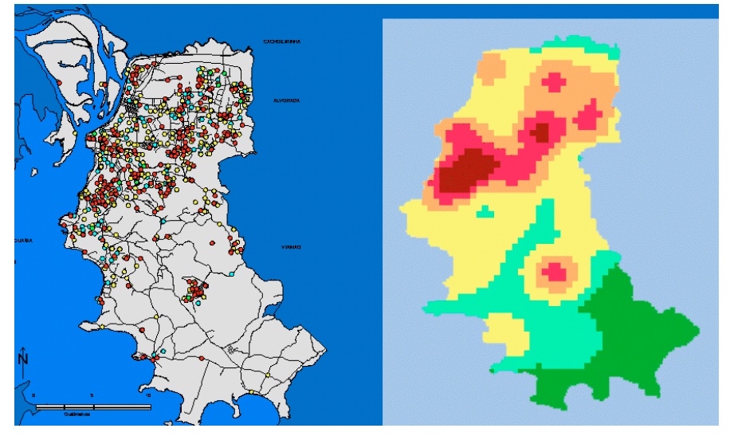
10.2.2SUPERFÍCIES CONTÍNUAS
As superfícies contínuas representam variáveis que variam de forma gradual sobre o espaço geográfico. Elas são estimadas a partir de um conjunto de amostras de campo, cujas localizações podem estar regular ou irregularmente distribuídas.
Esse tipo de dado é comum em levantamentos de recursos naturais, originando mapas geológicos, topográficos, ecológicos, fitogeográficos e pedológicos, entre outros.
O principal objetivo da análise de superfícies é reconstruir a forma da superfície original — isto é, estimar os valores da variável em locais onde não houve medição direta, com base nas amostras disponíveis. A figura a seguir ilustra um exemplo de análise de superfícies para o estado de Santa Catarina e áreas próximas.
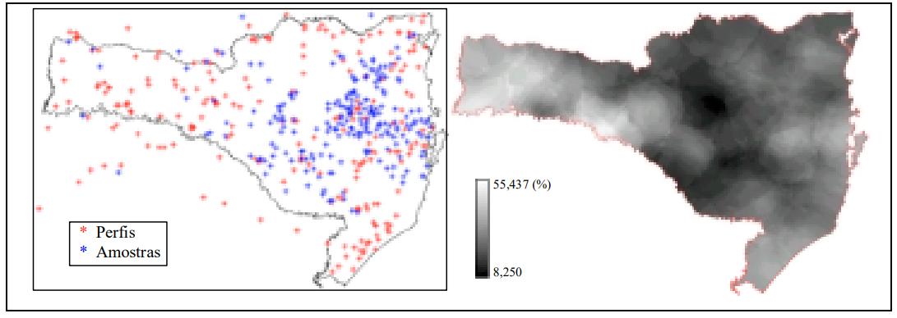
À esquerda, estão representados os pontos de coleta — em vermelho, os perfis de solo, e em azul, as amostras de solo. À direita, observa-se o mapa de distribuição espacial da variável saturação por bases, produzido por Simone Bônisch (INPE).
Cada cruz na imagem indica a localização de um ponto amostral, onde foram coletadas medidas da variável de interesse (neste caso, a saturação por bases do solo).
A partir desses valores, foi estimado um modelo de dependência espacial, que descreve como os valores da variável se relacionam com a distância entre os pontos. Esse modelo permite interpolar os valores da variável em locais não amostrados, resultando na superfície contínua apresentada no mapa. O resultado final é uma representação contínua da variável sobre o território, permitindo identificar padrões, gradientes e zonas de transição espacial.
10.2.3DADOS DE ÁREA
Tratam-se de dados associados a levantamentos populacionais, como censos e estatísticas de saúde, e que originalmente se referem a indivíduos localizados em pontos específicos do espaço. Por razões, por exemplo, de confidencialidade, estes dados são agregados em unidades de análise, usualmente delimitadas por polígonos fechados (setores censitários, zonas de endereçamento postal, municípios). Dentro dos polígonos fechados, supõe-se haver homogeneidade interna, ou seja, mudanças importantes só ocorrem nos limites. Nas próximas linhas, serão dados alguns exemplos motivacionais.
INDICADORES DE DOENÇAS
A distribuição de indicadores casos de uma doença pode formar um padrão no espaço. Descrever o desenvolvimento de uma epidemia no espaço sugere formas de controlar e combater.
Caracterizando a localização de serviços de saúde: a demanda pelos serviços está sendo atendida adequadamente?
Poderia ser feita uma nova alocação geográfica de recursos que seja mais eficiente?
Há alguma associação entre a localização dos casos de uma doença e a posição de alguma fonte suspeita (rio, estação nuclear, fábrica,..)?
TAXA DE MORTALIDADE POR CÂNCER DE PULMÃO - 1994
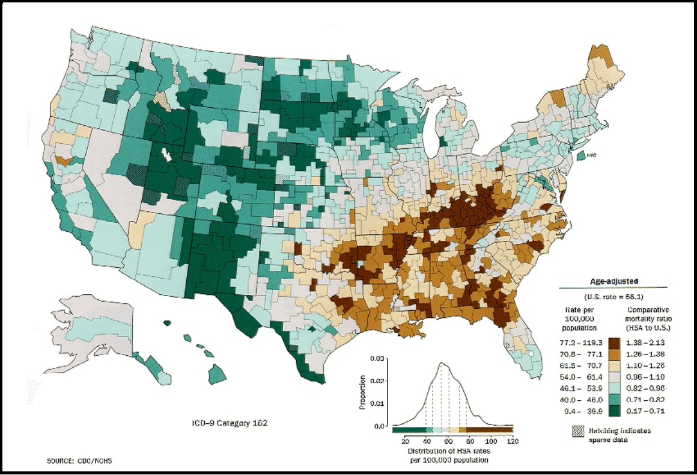
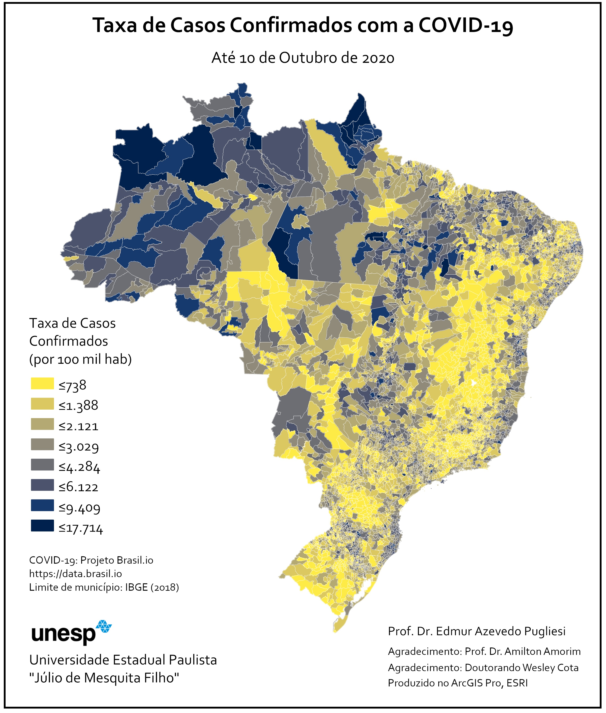
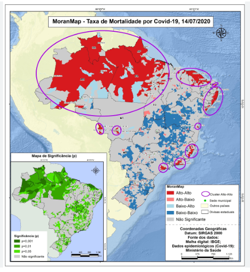
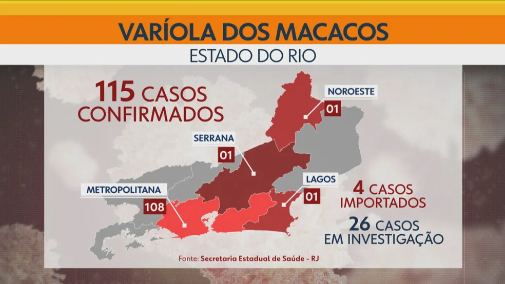
INDICADORES SOCIODEMOGRÁFICOS
Os indicadores sóciodemográficos evidenciam as múltiplas realidades sociais presentes no País e contribuem para a formulação de políticas e programas que visem à melhoria das desigualdades encontradas, em consonância com as diferenças demográficas, epidemiológicas e socioeconômicas.
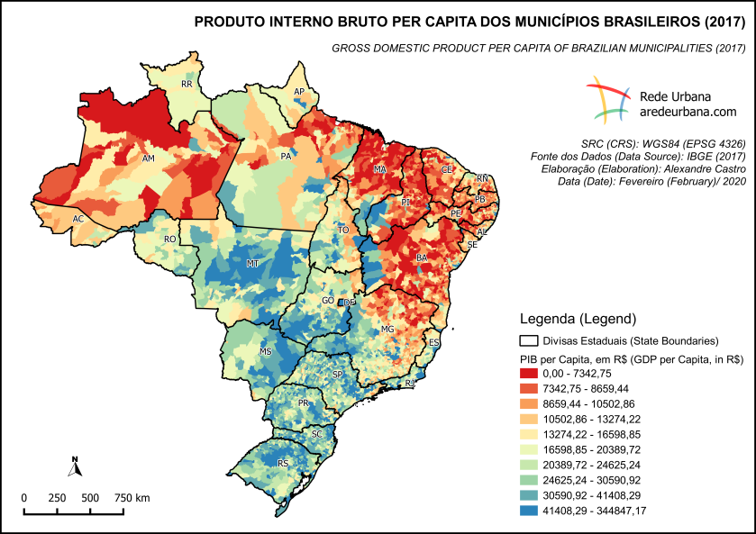
\[\\[0.1in]\]
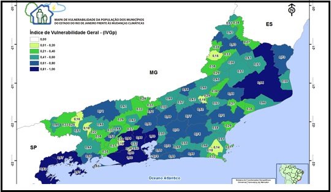
\[\\[0.1in]\]
% DE ANALFABETISMO ACIMA DE 15 ANOS - 2018
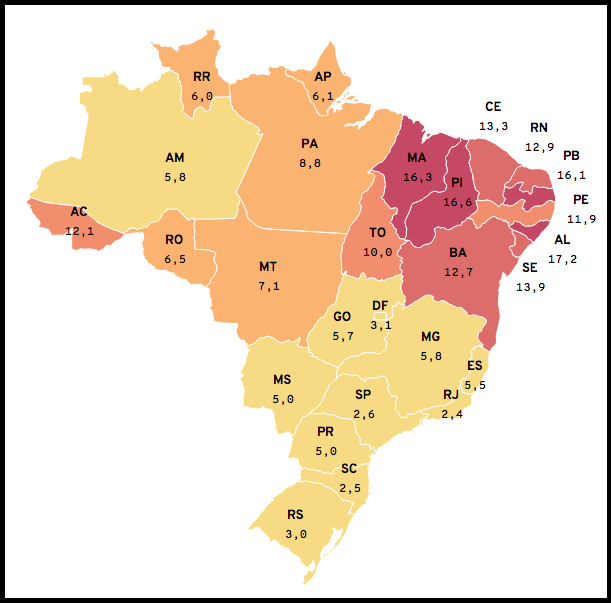
\[\\[0.1in]\]
Neste capítulo, trataremos apenas de dados de área atrelados a unidades geográficas brasileiras.
10.3ARQUIVO shapefile
Antes de construirmos qualquer mapa, é fundamental compreender o que, de fato, estamos utilizando como base geográfica. Em aplicações no R — e em Sistemas de Informação Geográfica (SIG) de forma geral — um dos formatos mais tradicionais para armazenar dados espaciais é o chamado shapefile.
Um shapefile é um formato de arquivo amplamente utilizado para representar objetos geográficos vetoriais, como:
limites de municípios
estados
regiões de saúde
territórios administrativos em geral
Esses objetos são compostos por geometrias, que descrevem a forma e a localização das áreas no espaço. No caso mais comum em saúde pública — como mapas de cobertura vacinal por município — estamos lidando com polígonos, ou seja, áreas delimitadas por fronteiras.
Apesar de ser chamado no singular, o shapefile é, na verdade, um conjunto de arquivos que trabalham em conjunto. Os principais são:
.shp → armazena a geometria (as formas no mapa)
.shx → índice das geometrias
.dbf → tabela de atributos (informações associadas a cada área)
É justamente no arquivo .dbf que encontramos informações como:
nome do município
código identificador
outras variáveis que permitem integrar dados externos
Essa estrutura é essencial porque separa, de forma organizada, o “desenho” do mapa (geometria) das informações associadas a cada região (atributos).
Em um contexto de pesquisas em vacinação, por exemplo, o shapefile funciona como a base territorial sobre a qual iremos acoplar os dados epidemiológicos. Por exemplo, podemos ter:
um shapefile com os limites dos municípios brasileiros
uma base de dados com cobertura vacinal por município
Ao integrar essas duas informações, conseguimos representar a cobertura vacinal diretamente no território.
É importante destacar que essa integração só é possível porque existe uma chave comum entre as bases — geralmente um código geográfico padronizado (como o código do município de 6 ou 7 dígitos).
Em termos práticos, ao trabalhar com mapas, estamos sempre combinando dois elementos:
uma base geográfica (como o shapefile)
um conjunto de dados (como indicadores de vacinação)
10.4O PACOTE geobr
O geobr é um pacote do R que permite que os usuários acessem facilmente os shapefiles do Instituto Brasileiro de Geografia e Estatística (IBGE) e outros conjuntos oficiais de dados espaciais do Brasil. Esse acesso é direto pelo pacote e o usuário nao precisa importar shapefiles de forma manual.
O pacote inclui uma ampla variedade de conjuntos de dados geográficos como recursos simples, disponíveis em várias escalas geográficas e por vários anos. O pacote geobr foi desenvolvido por Rafael Henrique Moraes Pereira, pesquisador do Instituto de Pesquisa Econômica Aplicada (IPEA) e está sempre sob constante atualização.
Mais informações sobre o pacote geobr podem ser encontradas no site github. Para cada unidade geográfica de interesse, o pacote geobr tem uma função diferente, dentre as seguintes:
Cada função acima gera o shapefile de uma unidade geográfica. Todas essas shapefiles possuem uma coluna denotada por geom que contém as coordenadas (latitude e longitude) de cada unidade geográfica e assim o mapa é desenhado. Além disso, todas as funções possuem sintaxe similar que podem ser verificadas com maiores detalhes no CRAN geobr e também no help do R. Essas funções, de maneira geral, possuem a seguinte sintaxe:
read_funcao(year, simplified, showProgress)
em que
year é o ano da shapefile
simplified representa o nível de detalhamento da shapefile carregada. Pode ser T para simplificações e F para maior detalhamento.
showProgress é um valor lógico que vale T se você quer que o progresso de download da shapefile seja exibido.
Após carregar uma shapefile no geobr, utilizaremos a função geométricageom_sf() para plotar o mapa correspondente. Essa função tem a seguinte sintaxe:
ggplot(data=Shapefile)+geom_sf(fill ="cor de preenchimento",color ="cor das fronteiras" ,linewidth = número indicando a espessura da linha)
Em todos os mapas criados, utilizaremos o seguinte comando para remover latitudes e longitudes das shapefiles e deixar o gráfico mais “limpo”:
Para analisar e manipular dados referentes às diferentes unidades geográficas do Brasil, é fundamental que essas unidades estejam codificadas numericamente. Essa padronização facilita a integração entre bases de dados, a realização de cruzamentos e a criação de mapas coropléticos.
Por exemplo:
Rio de Janeiro (município):3304557
Rio de Janeiro (região geográfica imediata):330001
Rio de Janeiro (região geográfica intermediária):3301
Rio de Janeiro (estado):33
Nos exemplos apresentados ao longo do material, serão fornecidos mais detalhes sobre a estrutura e a lógica desses códigos numéricos, que variam conforme o tipo de unidade geográfica. A seguir, apresentamos as principais unidades geográficas brasileiras e explicações adicionais sobre cada uma delas.
10.4.1shapefile DO BRASIL
Para carregar a shapefile do Brasil, utilizaremos a funçãoread_country():
Cada estado brasileiro é codificado com um número de dois digitos. A codificação de cada estado pode ser consultada no link IBGE. Para carregar a shapefile dos estados brasileiros, utilizaremos a função read_state(). Essa função tem o argumentocode_state onde você pode especificar todos (“all”) ou colocar o código de um estado escolhido. Para fazer o mapa de todos os estados, faça:
Cada município brasileiro é codificado com um número de 7 digitos. A codificação de cada município pode ser consultada no link IBGE. Para carregar a shapefile dos municípios brasileiros, utilizaremos a função read_municipality(). Essa função tem o argumento code_muni onde você pode especificar todos os municípios (“all”), colocar o código do estado para ver os seus municípios ou colocar o código de apenas um município para representá-lo no mapa. Para fazer o mapa de todos os municípios, faça:
Por fim, com o shapefile dos municípios você pode construir facilmente o mapa de regiões específicas que envolvem municípios Brasileiros. Por exemplo, a região metropolitana de Belo Horizonte é formada por 34 municípios:
Código
cod_mun_rmbh <-c(3105004, # Baldim3106200, # Belo Horizonte3106705, # Betim3109006, # Brumadinho3110004, # Caeté3112505, # Capim Branco3117876, # Confins3118601, # Contagem3124104, # Esmeraldas3126000, # Florestal3129806, # Ibirité3130101, # Igarapé3132206, # Itaguara3133709, # Itatiaiuçu3134608, # Jaboticatubas3136652, # Juatuba3137601, # Lagoa Santa3140159, # Mário Campos3140704, # Mateus Leme3141108, # Matozinhos3144805, # Nova Lima3136603, # Nova União3149309, # Pedro Leopoldo3153905, # Raposos3154606, # Ribeirão das Neves3154804, # Rio Acima3155306, # Rio Manso3156700, # Sabará3157807, # Santa Luzia3162922, # São Joaquim de Bicas3162955, # São José da Lapa3165537, # Sarzedo3168309, # Taquaraçu de Minas3171204# Vespasiano)
Podemos fazer o seu mapa com os seguintes comandos:
10.4.5shapefiles DAS REGIÕES IMEDIATAS E INTERMEDIÁRIAS
As regiões geográficas imediatas e intermediárias constituem a divisão geográfica regional do país, segundo a composição elaborada pelo Instituto Brasileiro de Geografia e Estatística (IBGE). As regiões imediatas são agrupamentos de municípios que têm como principal referência a rede urbana e possuem um centro urbano local como base, definidos a partir da conexão entre cidades próximas por meio de relações de dependência e deslocamento da população em busca de bens, serviços e trabalho. Já as regiões intermediárias são agrupamentos de regiões imediatas articuladas pela influência de uma metrópole, capital regional ou centro urbano representativo dentro do conjunto. Ambas foram instituídas em 2017, substituindo as antigas microrregiões e macrorregiões criadas em 1989, e têm como finalidade principal subsidiar o planejamento e a elaboração de estimativas territoriais.
Cada uma dessas divisões possui um código numérico único definido pelo IBGE. As regiões geográficas imediatas são identificadas por 6 dígitos, enquanto as regiões geográficas intermediárias possuem 4 dígitos. Esses códigos podem ser consultados diretamente no siteWikipedia, onde estão disponíveis as tabelas com os códigos e denominações oficiais das regiões.
Para trabalhar com essas divisões no R, é possível utilizar as funções do pacote geobr: read_immediate_region() e read_intermediate_region(). A primeira carrega a shapefile das regiões imediatas, cujo argumento code_immediate permite especificar todas as regiões (“all”), um estado ou apenas uma região imediata. A segunda carrega as regiões intermediárias, com o argumento code_intermediate que segue a mesma lógica. O Brasil possui 510 regiões geográficas imediatas e 133 regiões geográficas intermediárias, cada uma identificada por seu respectivo código numérico definido pelo IBGE.
As Regiões de Saúde são formadas por municípios fronteiriços que compartilham identidades culturais, econômicas e sociais, redes de comunicação e infraestrutura de transportes. A finalidade dessas regiões é integrar a organização, o planejamento e a execução de ações e serviços de saúde.
Mecanismo interfederativo de gestão da saúde, esses territórios vizinhos — marcados pela circulação e vivências em comum entre populações — têm entre seus objetivos a garantia do acesso resolutivo da população à saúde, em tempo oportuno e com qualidade, incluindo ações e serviços de promoção, proteção e recuperação, organizados em Redes de Atenção à Saúde (RAS), assegurando a integralidade do SUS.
Cada Região de Saúde possui um código numérico definido oficialmente pelo Ministério da Saúde, e o Brasil conta atualmente com cerca de 438 regiões de saúdee 118 macrorregiões de saúde distribuídas entre os estados, número que passa por atualizações periódicas conforme revisões territoriais e aprimoramentos do processo de regionalização.
No R, é possível carregar as Regiões de Saúde utilizando a função read_health_region() do pacote geobr. Essa função permite especificar se o mapa a ser carregado corresponde às Macrorregiões ou às Microrregiões de Saúde, por meio do argumento macro.
- Para carregar as Macrorregiões de Saúde, utilize macro = TRUE;
- Para carregar as Microrregiões de Saúde, utilize macro = FALSE.
Um dos pontos mais poderosos da criação de mapas no R é a possibilidade de sobrepor camadas (layers) utilizando o pacote ggplot2. Cada chamada à função geom_sf() adiciona uma nova camada ao mapa, permitindo combinar diferentes objetos espaciais — como limites estaduais, municipais, rodovias ou pontos de interesse — em um mesmo gráfico.
A lógica é simples: o primeiro geom_sf() define a camada de base, sobre a qual outras camadas serão desenhadas. As camadas adicionadas depois aparecem por cima das anteriores, seguindo a ordem de código.
Por exemplo, podemos começar com o mapa do estado de Minas Gerais (shapefile guardada no objeto EstadoMG) e, posteriormente, adicionar os municípios da região metropolitana de Belo Horizonte (shapefile guardada no objeto RegiaoMetropolitanaBH). Veja como isso é feito adicionando as camadas a partir da função geom_sf:
Para escrever alguma informação nos polígonos fechados, basta acrescentar uma das seguintes funções do pacote ggsflabel (em ambas, use o argumento aes(label=...) para estabelecer a variávei que será exibida no mapa):
geom_sf_label: Essa função adiciona o rótulo no centróide do polígono.
geom_sf_label_repel: Essa função também adiciona o rótulo no centóide do polígono. A diferença reside no fato de essa função criar estratégias para repelir os rótulos e eles não ficarem sobrepostos.
Suponha o interesse de exibir a sigla dos estados brasileiros no mapa formado somente com os estados. Na shapefile dos estados, guardada no objeto Estado, a variável abbrev_state traz as siglas de cada um deles e sua exibição, a partir da função geom_sf_labe_repel é feita com os seguintes comandos:
Código
# Estado = Estado %>% rename(geometry = geom)# É necessário renomear a coluna geom pra geometry pra função # geom_sf_label_repel funcionarggplot(data=Estado)+geom_sf(fill="lightgreen",color="black",linewidth =0.5)+geom_sf_label_repel(aes(label = abbrev_state), )+theme_bw() +theme(axis.text =element_blank(),axis.ticks =element_blank(),axis.title =element_blank(),panel.grid =element_blank() )
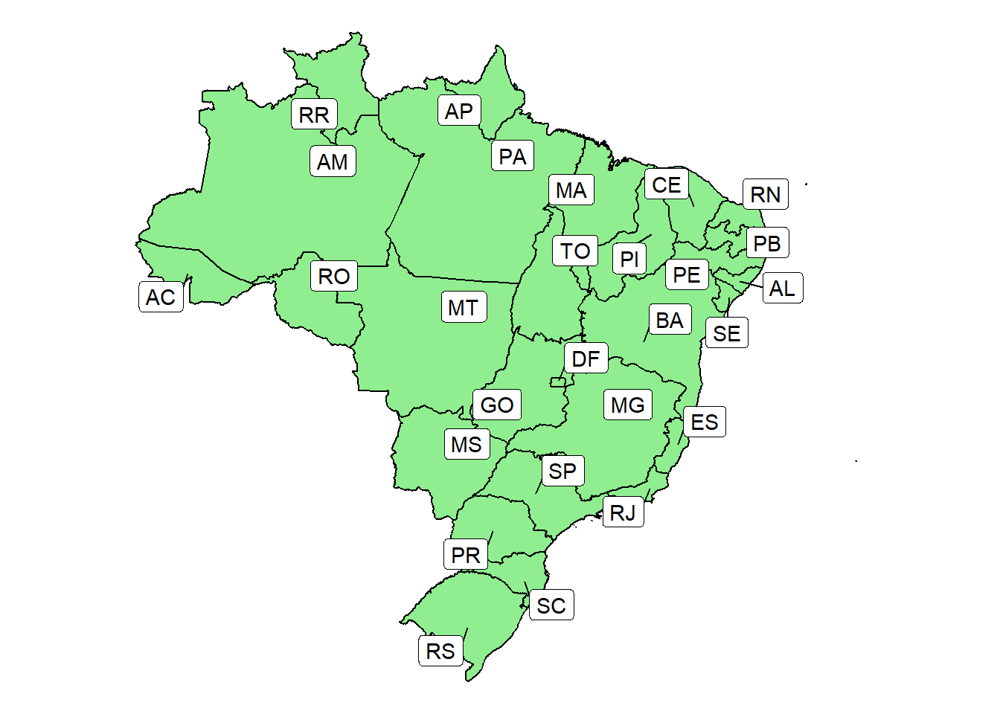
13ADICIONANDO A ROSA DOS VENTOS E A ESCALA
Em representações cartográficas, a inclusão de elementos de orientação, como a rosa dos ventos e a escala, é fundamental para facilitar a interpretação espacial do mapa. No R, o pacote ggspatial oferece funções simples e integradas ao ggplot2 para essa finalidade. A função annotation_north_arrow() adiciona a rosa dos ventos (compass rose), indicando o norte verdadeiro e permitindo diferentes estilos de representação, como o north_arrow_fancy_orienteering ou o north_arrow_minimal. Já a função annotation_scale() insere uma barra de escala (scale bar), que fornece uma referência visual de distância e pode ser personalizada quanto à posição, unidade e aparência. A combinação desses dois elementos contribui para a legibilidade e o rigor cartográfico das visualizações espaciais. Segue, brevemente, alguns argumentos úteis dessas duas funções:
annotation_north_arrow()
location: posição do símbolo no mapa (ex.: "tl", "tr", "bl", "br").
which_north: tipo de norte a ser exibido ("true" ou "grid").
style: define o estilo do símbolo. Exemplos:
north_arrow_fancy_orienteering
north_arrow_minimal
height e width: controlam o tamanho do símbolo.
annotation_scale()
location: posicionamento da barra de escala no mapa.
width_hint: ajusta a fração da largura do mapa ocupada pela barra de escala.
text_cex: tamanho do texto das marcações.
bar_cols: cores da barra de escala (ex.: c("black", "white")).
line_width: espessura das linhas.
unit_category: categoria de unidade ("metric", "imperial").
style: estilo da barra de escala, podendo ser simples ou alternada.
Segue um exemplo adicionando a rosa dos ventos e a escala para o mapa dos municípios mineiros:
O pacote geobr é uma das formas mais práticas e padronizadas de acessar mapas oficiais do Brasil diretamente no R, oferecendo dados de estados, municípios, regiões geográficas, áreas metropolitanas, entre outros recortes administrativos. Contudo, em muitos contextos de pesquisa e planejamento, precisamos de informações geográficas temáticas,
como rios, áreas protegidas, biomas, rodovias, escolas, unidades de saúde, entre outras — e esses arquivos não estão disponíveis no geobr.
Nesses casos, recorremos a fontes externas que disponibilizam arquivos no formato shapefile (.shp). Lembre-se que um shapefile é composto, na verdade, por um conjunto de arquivos que compartilham o mesmo nome base, mas possuem extensões diferentes (.shp, .shx, .dbf, .prj etc.),
e todos devem estar na mesma pasta para que a leitura funcione corretamente no R.
Esses arquivos podem ser baixados de instituições públicas, como IBGE, ICMBio, ANA, IBAMA, DATASUS e INPE, dependendo do tema do estudo. Uma vez obtidos, eles podem ser lidos no R com a função st_read do pacote sf, o mesmo utilizado internamente pelo geobr.
Vamos utilizar, como exemplo, a shapefile das URS (Unidades Regionais de Saúde), disponíveis nos arquivos:
Código
URS <-st_read("URS_MG.shp")
Reading layer `URS_MG' from data source
`C:\Users\Guilherme\Desktop\AnaliseDeDados\URS_MG.shp' using driver `ESRI Shapefile'
Simple feature collection with 28 features and 1 field
Geometry type: MULTIPOLYGON
Dimension: XY
Bounding box: xmin: -51.04608 ymin: -22.92276 xmax: -39.85683 ymax: -14.23318
Geodetic CRS: SIRGAS 2000
Vamos ao próximo passo após aprender a utilizar o pacote geobr para acessar as malhas territoriais do Brasil. Nosso objetivo agora é compreender como construir mapas coropléticos, isto é, mapas temáticos em que regiões geográficas são preenchidas com cores que representam valores de uma variável.
15.1INTRODUÇÃO
Mapas coropléticos são uma das ferramentas mais tradicionais e poderosas na análise espacial, permitindo identificar padrões, contrastes, tendências regionais e áreas críticas de interesse público.
Um mapa coroplético é um tipo de visualização em que:
Cada unidade geográfica (município, estado, região, setor censitário etc.) é preenchida com uma cor.
A cor representa uma categoria (no caso de variáveis qualitativas) ou um valor numérico (no caso de variáveis quantitativas).
Permite interpretar padrões espaciais, comparar regiões e destacar agrupamentos.
As técnicas de análise descritiva exploratória aplicadas a dados espaciais de área são essenciais ao desenvolvimento das etapas da modelagem estatística espacial, em geral sensível ao tipo de distribuição, à presença de valores extremos.
Se o fenômeno de interesse é quantitativo, o uso de diferentes pontos de corte da variável induz a visualização de diferentes aspectos. Basicamente, podem ser utilizados três formas distintas de pontos de corte:
intervalos iguais: Os valores máximo e mínimo são divididos pelo número de classes. Se a variável tem um distribuição muito concentrada de um lado, a maior parte das áreas será alocada a poucas cores.
percentis: O uso de percentis para definação de classes obriga a alocação dos polígonos em quantidades iguais pelas cores. Dependendo de como os percentis forem escolhidos, há uma chance de mascarar diferenças significativas em valores extremos e pode dificultar a identificação de áreas críticas.
desvios padrões: A distribuição da variável é apresentada em gradações de cores diferentes para valores acima e abaixo da média. Faz a suposição da normalidade da distribuição da variável. Esta hipótese é pouco realista no caso de variáveis em países de grande desigualdade social como o Brasil.
Em resumo, é parte importante da análise exploratória experimentar diferentes pontos de corte da variável na visualização dos mapas.
As diferentes técnicas de visualização estão ilustradas no exemplo a seguir, em que mostramos a distribuição espacial do indicador que mede a proporção de recém-nascidos que nasce em boas condições de saúde (Índice de APGAR) para os bairros do Rio de Janeiro, em determinado ano. Foram geradas duas visualizações, ambas com 6 pontos de corte e 6 cores. Na primeira figura, utilizou-se percentis e, na próxima, seis classes de igual tamanho.
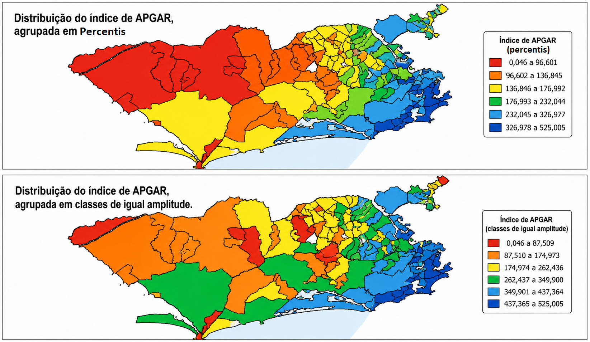
Como a distribuição da variável não é simétrica, quando se divide em classes de amplitudes iguais as de valores mais baixos (ou piores), assinaladas em vermelho ficam reduzidas a poucas áreas, enquanto que na divisão em percentis, por definição, um quinto das áreas ficará em cada classe.
Outra questão interessante é a comparação de mapas. Supondo a distribuição espacial de um indicador em diferentes anos: como visualizar a evolução temporal? Certamente os pontos de corte da variável nos diferentes períodos devem ser os mesmos. Observe na figura a evolução temporal da mortalidade por homicídios para os triênios 1 e 2, no Estado do Rio de Janeiro.
A apresentação dos quintis da distribuição conjunta dos indicadores permite visualizar bem o espalhamento desta “doença”.
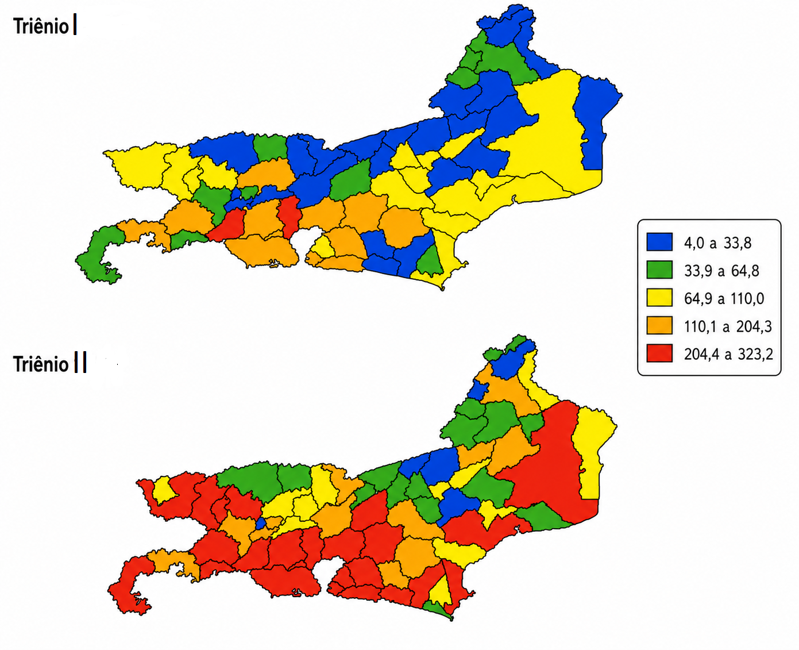
15.2ESPECIFICAÇÕES GERAIS
Para construir mapas coropléticos no R, precisamos integrar duas bases de informação:
Uma malha geográfica (shapefile)
Obtida viageobr ou exportada de algum outro recurso, já organizada como um objeto sf.
Contém geometrias (polígonos) e identificadores territoriais.
Uma base de dados com a variável de interesse
Pode ser qualitativa (ex.: porte populacional, tipo de gestão, categoria de risco).
Pode ser quantitativa (ex.: taxa de mortalidade, PIB per capita, IDEB).
Deve conter ao menos um identificador que permita a junção com a malha geográfica (por exemplo o código do município).
A etapa central é o join entre essas duas bases, unindo a geometria à informação estatística.
Ao construir os seus mapas atente-se para:
Utilizar paletas adequadas ao tipo de variável (qualitativa ou quantitativa).
Manter coerência visual, evitando excesso de categorias ou cores.
Verificar consistência dos identificadores territoriais antes do join.
Evitar mapas com áreas muito pequenas sem zoom, pois prejudicam a leitura.
Cuidado com interpretação equivocada quando populações muito diferentes estão envolvidas (preferir taxas e indicadores padronizados).
Ao fazer mais de um mapa para comparar um mesmo indicador em diferentes cenários, utilize uma única legenda
15.3PALETA DE CORES
Para a customização dos mapas nesse treinamento, utilizaremos a tabela de cores oriunda do pacoteRColorBrewer, disponível no R. O pacote RColorBrewer é uma ferramenta para gerenciar cores no R, oferecendo várias paletas de cores, como pode ser visto abaixo:
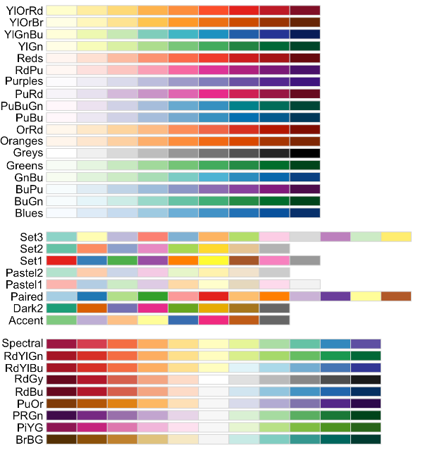
Existem 3 tipos de paletas:
As paletas sequenciais são adequadas para dados ordenados que progridem de baixo para cima. As etapas de claridade dominam a aparência desses esquemas, com cores claras para valores de dados baixos e cores escuras para valores de dados altos.
As paletas qualitativasnão implicam em diferenças de magnitude entre as classes de legenda, e os matizes são usados para criar as diferenças visuais primárias entre as classes.
As paletas divergentes colocam igual ênfase nos valores críticos intermediários e extremos em ambas as extremidades do intervalo de dados. A classe crítica ou quebra no meio da legenda é enfatizada com cores claras e os extremos baixo e alto são enfatizados com cores escuras que possuem matizes contrastantes.
Portanto, em todos os mapas aqui construídos, utilizaremos a paleta de cores do pacoteRColorBrewer. Para colorir os mapas, tem-se o comando padrão:
scale_fill_brewer(name ="Nome da legenda",palette ="Nome da Paleta",direction ="Coloque -1 se quiser a paleta no modo invertido",na.value ="Cor das observações NA")
15.4SITUAÇÃO PRÁTICA MOTIVADORA
A base de dados utilizada neste tópico contém informações municipais do Brasil ao longo de vários anos (2000–2024), abrangendo aspectos demográficos, educacionais, econômicos e epidemiológicos. Ela está estruturada de forma que cada linha representa um município em determinado ano, identificado por códigos oficiais do IBGE nas escalas de UF (2 digitos) e município (7 dígitos).
Do ponto de vista prático, essa base é adequada para:
Construção de mapas coropléticos, pois contém identificadores padronizados do IBGE (code_muni e code_state).
Análises temporais, já que há dados anuais de 2000 a 2024.
Integração com o geobr, pois o código de 7 dígitos é compatível com as malhas municipais, por exemplo.
Estudos de desigualdades regionais, relacionando indicadores econômicos, educacionais e de saúde.
Monitoramento de metas vacinais, tendo variáveis que indicam se a cobertura atingiu ou não a meta.
A base reúne tanto variáveis quantitativas contínuas (PIB per capita, taxas de mortalidade) quanto qualitativas (se a meta vacinal foi atingida). Isso permite análises comparativas entre municípios e regiões, além de permitir visualizações espaciais integradas.
As variáveis observadas são:
Variável
Significado
Unidade de Medida
Fonte
code_muni
Código do município (7 dígitos) segundo o IBGE
Código numérico
IBGE
code_state
Código da Unidade da Federação
Código numérico
IBGE
Ano
Ano de referência da observação
Ano (YYYY) de 2000 a 2024
—
Populacao
População residente estimada para o município naquele ano
Número de habitantes
IBGE – Estimativas populacionais
IDEB
Índice de Desenvolvimento da Educação Básica para os anos avaliados
índice (0 a 10)
INEP / MEC
Meta_BCG
Indica se o município atingiu a meta da cobertura vacinal da BCG
“Sim” / “Não”
PNI / Ministério da Saúde
Meta_Polio
Indica se o município atingiu a meta da cobertura vacinal da Poliomielite
“Sim” / “Não”
PNI / Ministério da Saúde
Taxa_Cancer
Taxa de mortalidade por neoplasias no município
óbitos por 100 mil habitantes
SIM / Ministério da Saúde
Taxa_Cardio
Taxa de mortalidade por doenças cardiovasculares
óbitos por 100 mil habitantes
SIM / Ministério da Saúde
Taxa_CausaExterna
Taxa de mortalidade por causas externas (acidentes, violência, etc.)
óbitos por 100 mil habitantes
SIM / Ministério da Saúde
PIB_percapita
PIB per capita municipal
R$ mil reais por pessoa
IBGE – Contas Regionais / Finanças Públicas
A variável IDEB foi observada apenas para os anos 2005, 2007, 2009, 2011, 2013, 2015, 2017, 2019, 2021 e 2023.
A variável PIB_percapita só não foi observada para os anos 2000, 2001, 2022, 2023 e 2024.
Essa base de dados está armazenada no arquivo Indicadores_Municipais.xlsx e os comandos a seguir fazem a leitura desses códigos:
Vamos então fazer a junção das duas bases (shapefile dos municípios brasileiros + base de dados dos indicadores). Para isso, usaremos a funçãoleft_join do pacote tidyr. Ambas as bases de dados têm a coluna code_muni em comum. Inicialmente, vamos carregar a shapefile dos municipios:
Código
# Leitura da shapefile dos municípiosMunicipio<-read_municipality(code_muni ="all",year=2020,simplified = T,showProgress = F)
Na sequência, faremos o join com a função left_join:
Código
# JoinDados = Municipio %>%left_join(Indicadores,by="code_muni")
É FUNDAMENTAL que, no left_join, a shapefile esteja à esquerda* e receba a base de dados com os indicadores a partir de uma ou mais colunas-chave comuns.
Assim, o objeto Dadosarmazena tanto a estrutura geométrica dos municípios como também os dados dos indicadores municipais.
Para preencher o mapa com cores, usaremos a seguinte sintaxe:
Assim, o argumento fill dentro de um mapeamento na função geom_Sf será responsável pelo preenchimento das unidades geográficas com cores de acordo com a variável de interesse.
15.5VARIÁVEIS QUALITATIVAS
Ao representar no mapa as variáveis categóricas, o objetivo principal é diferenciar grupos. Alguns exemplos:
Região do país
Porte do município
Grau de urbanização
Tipo de gestão em saúde
Categorias de risco (baixo, médio, alto)
Características da representação:
Cores distintas (paletas qualitativas).
O foco está na interpretação dos grupos, não em gradientes.
Com a exceção de variáveis qualitativas ordinais, onde há uma ordenação natural nas categorias.
Na nossa situação prática motivadora, temos duas variáveis qualitativas: Meta_BCG e Meta_Polio. Ambas verificam se a meta de cobertura vacinal foi atingida nos municípios nos anos avaliados. Por exemplo, vamos avaliar o alcance da meta nos municípios brasileiros em 2024 com respeito à vacinação por BCG:
Código
DadosA = Dados %>%filter(Ano ==2024) ggplot(DadosA) +geom_sf(aes(fill = Meta_BCG), color ="black") +scale_fill_brewer(name ="Atingiu a meta?",palette ="Set1",na.value ="gray") +theme_bw() +theme(axis.text =element_blank(),axis.ticks =element_blank(),axis.title =element_blank(),panel.grid =element_blank() )
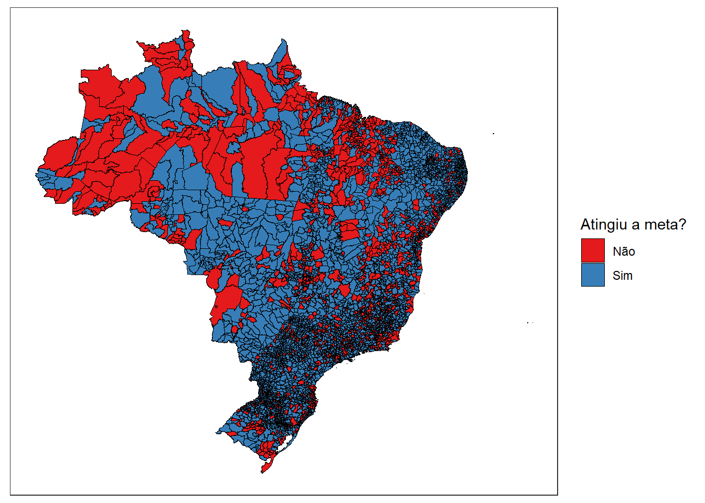
Foi utilizada a paleta de Cores Set1. Se quiser remover as fronteiras, coloque color = NA na função geom_sf Se quiser colocar a legenda dentro do mapa, use o comando theme(legend.position = c(n1, n2)), onde n1 e n2 são números entre 0 e 1 que representam as coordenadas relativas dentro do gráfico:
- n1: posição horizontal (0 = esquerda, 1 = direita)
- n2: posição vertical (0 = baixo, 1 = topo)
Podemos, também, avaliar o alcance da meta desse imunizante nos municípios mineiros no mesmo ano. Basta filtrar a variável code_state com o código da UF desejada. Para o caso de Minas Gerais, o código é 31 e seguem os comandos:
Código
DadosB = Dados %>%filter(Ano ==2024, code_state ==31) ggplot(DadosB) +geom_sf(aes(fill = Meta_BCG), color ="black") +scale_fill_brewer(name ="Atingiu a meta?",palette ="Set1") +theme_bw() +theme(axis.text =element_blank(),axis.ticks =element_blank(),axis.title =element_blank(),panel.grid =element_blank() )
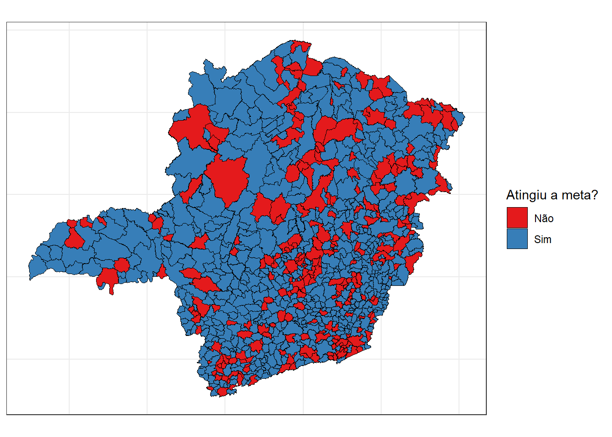
15.5.1FACETAMENTO
Imagine que seja de interesse avaliar o alcance das metas de cobertura em 2 anos (2000 e 2024). De forma mecânica, inicialmente, faríamos 2 gráficos isolados (um pra cada ano) e depois juntaríamos todos. Entretanto, os comandos da estrutura de facetas facilita e muito essa abordagem. Para isso, utilizaremos o comando facet_wrap:
facet_wrap(~Variavel):
Usado quando queremos “facetar” por apenas uma variável.
As categorias são dispostas lado a lado até preencher a grade definida.
Podemos, por exemplo, avaliar a evolução do alcance das metas ao longo dos anos para os municípios mineiros, considerando a vacina BCG. Ao considerar os anos 2000 e 2024, temos os seguintes comandos:
Código
DadosC = Dados %>%filter(Ano ==2000| Ano ==2024)%>%filter(code_state ==31)ggplot(DadosC) +geom_sf(aes(fill = Meta_BCG), color ="black") +scale_fill_brewer(name ="Atingiu a meta?",palette ="Set1") +facet_wrap(~Ano)+theme_bw() +theme(axis.text =element_blank(),axis.ticks =element_blank(),axis.title =element_blank(),panel.grid =element_blank() )
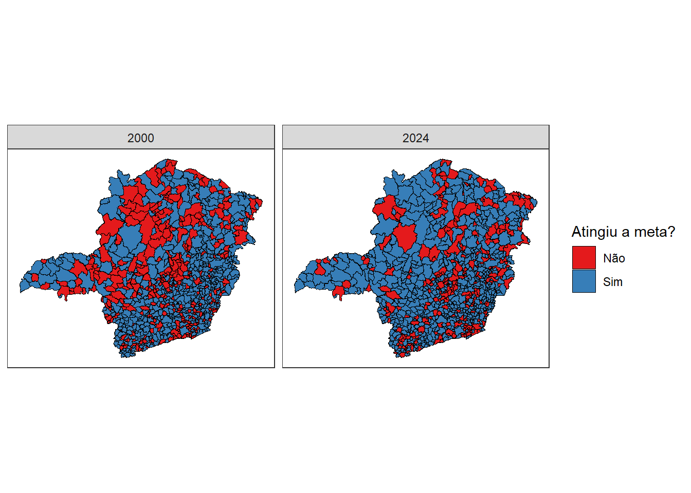
15.6VARIÁVEIS QUANTITATIVAS
Ao representar no mapa variáveis numéricas (taxas, indicadores, valores contínuos), o objetivo principal passa a ser visualizarpadrões gradativos no território. Diferentemente das variáveis qualitativas, onde buscamos distinguir grupos, aqui queremos entender como os valores mudam de uma região para outra, identificando áreas com valores mais altos, mais baixos e transições entre eles.
Exemplos comuns de variáveis quantitativas incluem:
Taxas de mortalidade
Cobertura vacinal
PIB per capita
Indicadores socioeconômicos
Prevalência ou incidência de doenças
Índices ambientais
Em nossa base de dados, temos várias variáveis quantitativs : IDEB, Populacao, Taxa_Cancer, Taxa_Cardio, Taxa_CausaExterna e Pib_percapita. Para representar estas variáveis nos mapas, podemos utilizar duas formas diferentes:
Escala contínua
Classes definidas por cortes determinísticos ou percentis
Ambas permitem visualizar padrões espaciais, mas fazem isso com objetivos e efeitos diferentes.
15.6.1ESCALA CONTÍNUA
Na escala contínua, cada município recebe uma cor proporcional ao valor real da variável. É a forma mais “direta” de representar a informação, pois não transforma os dados em categorias. Essa escala deve ser usada:
Quando os valores estão bem distribuídos.
Quando a variável não apresenta muitos outliers.
Quando queremos observar gradientes suaves, como aumento ou diminuição gradual de um indicador ao longo do território.
As cores seguem normalmente uma paleta sequencial: tons mais claros representam valores menores; tons mais escuros, valores maiores. Esse tipo de mapa destaca padrões contínuos, como faixas de valores ou transições geográficas graduais.
Para exemplificar, vamos considerar os dados da variável Taxa_Cancer para os municípios brasileiros no ano de 2024.
Código
DadosD = Dados %>%filter(Ano ==2024) %>%filter(code_state==31) ggplot(DadosD) +geom_sf(aes(fill = Taxa_Cancer), color ="black") +scale_fill_viridis_c(name ="Obitos por 100 mil habitantes",option ="plasma", direction =-1)+theme_bw() +theme(axis.text =element_blank(),axis.ticks =element_blank(),axis.title =element_blank(),panel.grid =element_blank() )
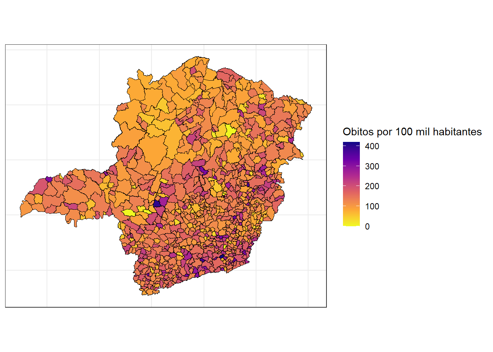
Para construir gráficos com escala contínua você pode usar, por exemplo, a função scale_fill_viridis_c(), do pacote viridis
Para um país continental como o nosso esse tipo de abordagem na escala pode dificultar a interpretabilidade. Fica difícil distinguir diferenças e comparar diferentes unidades geográficas. Qualquer outlier que você tiver vai “puxar” a cor e prejudicar ainda mais a interpretação. Por isso, essa escala não será priorizada nesse treinamento e está aqui apenas a título de curiosidade.
15.6.2ESCALA EM CLASSES
Outra forma de representar variáveis quantitativas é transformar os valores em classes baseadas na própria distribuição dos dados, como quartis (4 grupos), quintis (5 grupos) ou decis (10 grupos). Nesses casos, cada classe contém o mesmo número de municípios.
Outra situação que cabe aqui também é se sua variável quantitativa já possui quebras naturais determinísticas.
Utilize essa escala nas seguintes situações:
Quando a variável é assimétrica.
Quando há outliers que estouram a escala da cor.
Quando queremos evidenciar grupos relativos (ex.: 20% menores, 20% maiores).
Nesse tipo de mapa, as cores representam categorias, não valores exatos. Assim, dois municípios dentro do mesmo quintil podem ter valores diferentes, mas pertencem ao mesmo intervalo relativo. O foco é comparar faixas de posição dentro da distribuição, e não os números absolutos.
Eu criei uma função chamada Categorizacao que faz as quebras na sua variável quantitativa de acordo com três argumentos:
x = variável de interesse
breaks = os pontos de corte
a = quantas casas decimais será utilizado na impressão das classes.
sep = o separador usado em cada intervalo
É importante mencionar que os breaks serão adicionados aos valores mínimo e máximo da amostra para a composição das classes
Código
Categorizacao <-function(x, breaks, a , sep ) {# Define o incremento a partir do número de casas decimais inc <-10^(-a)# Obtém e arredonda os limites dos dados minimo <-round(min(x, na.rm =TRUE), a) maximo <-round(max(x, na.rm =TRUE), a)# Organiza, arredonda e remove pontos de corte repetidos breaks <-sort(unique(round(breaks, a)))# Cria os rótulos das categorias labs <-paste(c(minimo, breaks + inc),c(breaks, maximo),sep = sep )# Classifica cada valor nos intervalos definidoscut(round(x, a),breaks =c(minimo, breaks, Inf),include.lowest =TRUE,right =TRUE,labels = labs )}
Vamos fazer um exemplo de uso dessa função com a taxa de mortalidade por câncer nos municípios brasileiros no ano de 2024:
Código
DadosE <- Dados %>%filter(Ano ==2024)%>%filter(code_state==31)
PERCENTIS
Utilize a função quantile para produzir as suas quebras via percentil. Dessa forma, utilize o seguinte esquema:
breaks =quantile(x,probs=c("probabilidades de corte"))
Com essas quebras, podemos criar a variável Taxa_Cancer_Cat que receberá a função Categorizacao, arredondando os valores apresentados em 1 casa decimal:
ggplot(DadosE) +geom_sf(aes(fill = Taxa_Cancer_Cat), color ="black") +scale_fill_brewer(name ="Óbitos por 100\nmil habitantes",palette ="Reds",na.value ="gray") +theme_bw() +theme(axis.text =element_blank(),axis.ticks =element_blank(),axis.title =element_blank(),panel.grid =element_blank() )
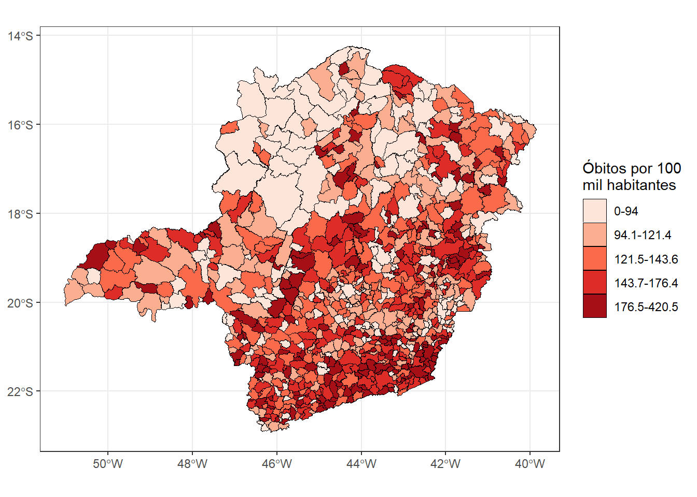
Foi utilizada a paleta reds. Altere e veja outras paletas do pacote RColorBrewer
O objeto breaks são os pontos de corte desejados. Experimente os seguintes breaks para outras duas situações comuns:
breaks = c(100,200,300), para considerar os cortes em 100, 200 e 300 breaks = quantile(x,probs = c(0.05,0.20,0.40,0.60,0.80,0.95), na.rm=T), para pegar os intervalos de classe [min,\(P_{5}\)] - (\(P_{5}\),\(P_{20}\)) - (\(P_{20}\),\(P_{40}\)) - (\(P_{40}\),\(P_{60}\)) - (\(P_{60}\),\(P_{80}\)) - (\(P_{80}\),\(P_{95}\)) - (\(P_{95}\),max)
15.6.3FACETAMENTO
Assim como os mapas que fizemos para as variáveis qualitativas, nos mapas com variáveis quantitativas a estratégia do facetamento também pode ser utilizada. Podemos, por exemplo, avaliar a evolução da taxa de mortalidade por Causas Externas nos municípios do Brasil. Ao considerar os anos 2000 e 2024, temos os seguintes comandos:
Código
DadosF <- Dados %>%filter(Ano ==2000| Ano==2024)%>%filter(code_state==31)breaks =quantile(DadosF$Taxa_CausaExterna,probs =c(0.2,0.4,0.6,0.8))DadosF$Taxa_CausaExterna_Cat =Categorizacao(x=DadosF$Taxa_CausaExterna,breaks = breaks,sep="-",a=1)ggplot(DadosF) +geom_sf(aes(fill = Taxa_CausaExterna_Cat), color ="black") +scale_fill_brewer(name ="Óbitos por\n100 mil habitantes",palette ="Greens",na.value ="grey27") +facet_wrap(~Ano)+theme_bw() +theme(axis.text =element_blank(),axis.ticks =element_blank(),axis.title =element_blank(),panel.grid =element_blank() )
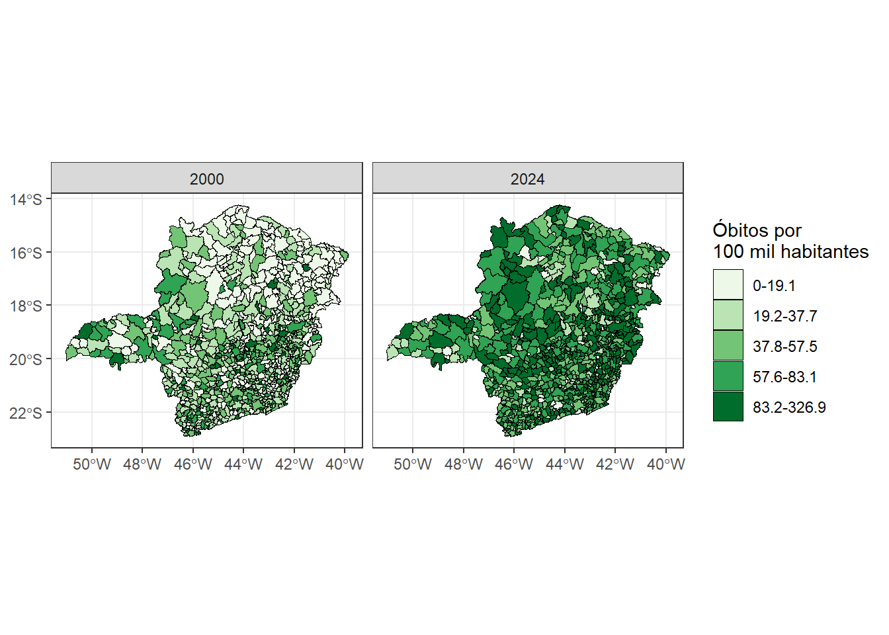
Código fonte
---output: html_documenteditor_options: chunk_output_type: console---# **MAPAS COROPLÉTICOS**## **INTRODUÇÃO**Compreender a distribuição **espacial** de dados oriundos de fenômenos que ocorrem no espaço constitui hoje um dos grandes desafios para a elucidação de **questões centrais** em diversas **áreas do conhecimento** — seja em saúde, meio ambiente, geologia, agronomia, entre tantas outras.Esses estudos vêm se tornando cada vez mais **frequentes** graças à ampla disponibilidade de **sistemas de informação geográfica (SIG)** com interfaces cada vez mais acessíveis. Tais sistemas permitem a **visualização espacial** de variáveis como a população de indivíduos, índices de qualidade de vida, volume de vendas em uma região ou taxas de mortalidade por determinada doença em municípios específicos.De modo geral, basta dispor de um **banco de dados** e de uma **base geográfica** (como um mapa de municípios) para representar visualmente o fenômeno em estudo. O resultado é um **mapa temático** — muitas vezes colorido — que facilita a identificação de **padrões espaciais** e **diferenças regionais**.Além da percepção visual, a análise espacial busca **quantificar e interpretar** esses padrões de maneira **objetiva e mensurável**, o que abre caminho para uma ampla variedade de aplicações, como por exemplo:- **Epidemiologistas analisam a ocorrência de doenças:** A distribuição dos casos forma um padrão espacial? Há associação com fontes de poluição ou evidências de contágio?\- **Pesquisadores da área de segurança pública investigam a concentração de roubos:** Certas áreas apresentam correlação com características socioeconômicas específicas?\- **Geólogos estudam depósitos minerais:** Amostras coletadas em campo permitem estimar a distribuição do mineral em toda a região?\- **Agrônomos planejam o zoneamento agrícola:** Quais variáveis — como solo, vegetação e relevo — explicam melhor onde cada tipo de cultura se desenvolve de forma mais adequada?Todos esses exemplos se enquadram no campo da **análise espacial de dados geográficos**, cuja ênfase está em **mensurar propriedades e relacionamentos considerando explicitamente a localização** dos fenômenos observados.Em outras palavras, a ideia central é **incorporar o espaço à análise estatística**, ampliando nossa capacidade de compreender a realidade de forma contextualizada e territorialmente informada.Neste capítulo, exploraremos os seguintes tópicos:1. **Introdução à Análise Espacial**\2. **Unidades Geográficas Brasileiras**\3. **Construção de Mapas Coropléticos**Para isto, serão necessários os **seguintes pacotes**:```{r,warning=FALSE,message=FALSE}library(openxlsx) # Leitura de arquivos excellibrary(ggplot2) # Gráficoslibrary(geobr) # Shapefiles do Brasillibrary(dplyr) # Manipulação de bases de dadoslibrary(ggsflabel) # Criação de Labels que se repelemlibrary(ggspatial) # Rosa dos ventos e escalalibrary(sf) # Leitura de shapefiles fora do geobr```## **ESTATÍSTICA ESPACIAL**A taxonomia mais utilizada para caracterizar os problemas de análise espacial considera **três tipos de dados**:### **EVENTOS OU PADRÕES PONTUAIS**São fenômenos expressos através de ocorrências identificadas como **pontos localizados no espaço, denominados processos pontuais**. São exemplos:- Localização de crimes;- Ocorrências de doenças;- Localização de espécies vegetais.Nesse tipo de dado espacial, objeto de interesse é a **propria localização espacial dos eventos em estudo**. Por exemplo, será que a **mortalidade por tuberculose**, mesmo considerando os fatores de risco conhecidos, **varia com o local de residência do paciente**?\Os **objetivos** da análise de processos pontuais são- **Estudar a distribuição espacial** destes pontos;- **Testar hipóteses** sobre o padrão observado: se é aleatório ou se apresenta em aglomerados ou regularmente distribuido;- **Estabelecer o relacionamento** de ocorrência de eventos com características do indivíduo, incorporando a possibilidade de haver algum fator ambiental, do qual não se dispõe de dados.Como exemplo, a figura abaixo ilustra a aplicação das análises de padrões pontuais para o caso de **mortalidade por causas externas em Porto Alegre**, com os dados de 1996, realizada por Simone Santos e Christovam Barcellos, da FIOCRUZ. A localização dos homicídios (vermelho), acidentes de trânsito (amarelo) e suicídios (azul) está mostrada na figura à esquerda. À direita, apresenta-se uma superfície para a **intensidade estimada**, que pode ser pensada como a **“temperatura da violência”**. A superfície interpolada mostra um padrão de distribuição de pontos com uma **forte concentração no centro da cidade e decrescendo em direção aos bairros mais afastados**.### **SUPERFÍCIES CONTÍNUAS**As **superfícies contínuas** representam variáveis que variam de forma gradual sobre o espaço geográfico. Elas são estimadas a partir de um **conjunto de amostras de campo**, cujas localizações podem estar **regular ou irregularmente distribuídas**.Esse tipo de dado é comum em levantamentos de **recursos naturais**, originando mapas **geológicos**, **topográficos**, **ecológicos**, **fitogeográficos** e **pedológicos**, entre outros.O principal objetivo da análise de superfícies é **reconstruir a forma da superfície original** — isto é, estimar os valores da variável em locais onde não houve medição direta, com base nas amostras disponíveis. A figura a seguir ilustra um exemplo de análise de superfícies para o estado de **Santa Catarina** e áreas próximas.À esquerda, estão representados os pontos de coleta — em vermelho, os **perfis de solo**, e em azul, as **amostras de solo**. À direita, observa-se o **mapa de distribuição espacial** da variável **saturação por bases**, produzido por **Simone Bônisch (INPE)**.Cada cruz na imagem indica a **localização de um ponto amostral**, onde foram coletadas medidas da variável de interesse (neste caso, a saturação por bases do solo).A partir desses valores, foi **estimado um modelo de dependência espacial**, que descreve como os valores da variável se relacionam com a distância entre os pontos. Esse modelo permite **interpolar** os valores da variável em locais não amostrados, resultando na **superfície contínua** apresentada no mapa. O resultado final é uma **representação contínua da variável sobre o território**, permitindo identificar padrões, gradientes e zonas de transição espacial.### **DADOS DE ÁREA**Tratam-se de dados associados a levantamentos populacionais, como **censos e estatísticas de saúde**, e que originalmente se referem a **indivíduos localizados em pontos específicos do espaço**. Por razões, por exemplo, de **confidencialidade**, estes dados são **agregados em unidades de análise**, usualmente delimitadas por **polígonos fechados** (setores censitários, zonas de endereçamento postal, municípios). Dentro dos polígonos fechados, supõe-se haver **homogeneidade interna**, ou seja, mudanças importantes só ocorrem nos limites. Nas próximas linhas, serão dados alguns **exemplos motivacionais**. **INDICADORES DE DOENÇAS**A distribuição de indicadores **casos de uma doença** pode formar um **padrão no espaço.** Descrever o desenvolvimento de uma epidemia no espaço sugere formas de controlar e combater.- **Caracterizando a localização de serviços de saúde**: a demanda pelos serviços está sendo atendida adequadamente?- Poderia ser feita uma nova **alocação geográfica de recursos** que seja mais eficiente?- Há alguma **associação entre a localização dos casos** de uma doença e a posição de alguma **fonte suspeita** (rio, estação nuclear, fábrica,..)?<center>**TAXA DE MORTALIDADE POR CÂNCER DE PULMÃO - 1994**</center>**INDICADORES SOCIODEMOGRÁFICOS**Os **indicadores sóciodemográficos** evidenciam as múltiplas realidades sociais presentes no País e contribuem para a **formulação de políticas** e programas que visem à **melhoria das desigualdades encontradas**, em consonância com as diferenças demográficas, epidemiológicas e socioeconômicas.$$\\[0.1in]$$<center></center>$$\\[0.1in]$$<center>**% DE ANALFABETISMO ACIMA DE 15 ANOS - 2018** </center> $$\\[0.1in]$$> Neste capítulo, trataremos apenas de **dados de área** atrelados a unidades geográficas brasileiras.## **ARQUIVO `shapefile`**Antes de **construirmos qualquer mapa**, é fundamental compreender o que, de fato, **estamos utilizando como base geográfica**. Em aplicações no `R` — e em **Sistemas de Informação Geográfica** (SIG) de forma geral — um dos **formatos mais tradicionais para armazenar dados espaciais** é o chamado **shapefile**.Um **shapefile** é um formato de arquivo amplamente utilizado para representar **objetos geográficos vetoriais**, como: - **limites de municípios** - **estados** - **regiões de saúde** - **territórios administrativos em geral** Esses objetos são compostos por **geometrias**, que descrevem a **forma e a localização das áreas no espaço**. No caso mais comum em saúde pública — como **mapas de cobertura vacinal** por município — estamos lidando com **polígonos**, ou seja, **áreas delimitadas por fronteiras**.Apesar de ser chamado no singular, o *shapefile* é, na verdade, um **conjunto de arquivos** que trabalham em conjunto. **Os principais são**:- `.shp` → armazena a geometria (as formas no mapa) - `.shx` → índice das geometrias - `.dbf` → tabela de atributos (informações associadas a cada área) É justamente no arquivo `.dbf` que encontramos informações como: - **nome do município** - **código identificador** - **outras variáveis que permitem integrar dados externos** Essa estrutura é **essencial** porque separa, de forma organizada, **o “desenho” do mapa** (geometria) das **informações associadas a cada região** (atributos).Em um **contexto de pesquisas em vacinação, por exemplo**, o shapefile funciona como a **base territorial** sobre a qual **iremos acoplar os dados epidemiológicos**. Por exemplo, podemos ter:- um **shapefile** com os limites dos municípios brasileiros - uma **base de dados com cobertura vacinal por município** Ao **integrar** essas duas informações, conseguimos representar a **cobertura vacinal diretamente no território**.É importante destacar que essa **integração só é possível porque existe** uma **chave comum** entre as bases — geralmente um **código geográfico padronizado** (como o código do município de 6 ou 7 dígitos).Em termos práticos, ao **trabalhar com mapas, estamos sempre combinando dois elementos**:- uma **base geográfica** (como o shapefile) - um **conjunto de dados** (como indicadores de vacinação) ## **O PACOTE `geobr`**O `geobr` é um pacote do `R` que permite que os usuários acessem facilmente os ***shapefiles*** do Instituto Brasileiro de Geografia e Estatística (IBGE) e outros conjuntos oficiais de dados espaciais do **Brasil**. Esse acesso é direto pelo pacote e o usuário nao precisa importar `shapefiles` de forma manual.O pacote inclui uma ampla variedade de **conjuntos de dados geográficos** como recursos simples, disponíveis em várias escalas geográficas e por vários **anos**. O pacote `geobr` foi desenvolvido por **Rafael Henrique Moraes Pereira**, pesquisador do Instituto de Pesquisa Econômica Aplicada (IPEA) e está sempre sob constante atualização.Mais informações sobre o pacote `geobr` podem ser encontradas no site [`github`](https://github.com/ipeaGIT/geobr). Para cada unidade geográfica de interesse, o pacote `geobr` tem uma **função diferente**, dentre as seguintes:| Função | Geografias disponíveis | Anos disponíveis | Fonte ||-----------------------------|-------------------------------------------------------------------|------------------------------------------------------------------------------------------------------------------------------------------------------------------------------------------------------------------------------------------|----------------||`read_amazon`| Amazônia Legal | 2019, 2020, 2021, 2022, 2024 | MMA ||`read_biomes`| Biomas | 2006, 2019, 2025 | IBGE ||`read_census_tract`| Setor censitário | 2000, 2010, 2022 | IBGE ||`read_conservation_units`| Unidades de conservação ambiental | 202402, 202503 | MMA ||`read_country`| País | 1872, 1900, 1911, 1920, 1933, 1940, 1950, 1960, 1970, 1980, 1991, 2000, 2001, 2010, 2013–2025 | IBGE ||`read_disaster_risk_area`| Áreas de risco de desastres | 2010 | CEMADEN e IBGE ||`read_favelas`| Favelas e comunidades urbanas | 2022 | IBGE ||`read_health_facilities`| Estabelecimentos de saúde | 201704, 201707, 201710, 201801, 201804, 201807, 201810, 201901, 201904, 201907, 201910, 202001, 202004, 202007, 202010, 202101, 202104, 202107, 202110, 202201, 202204, 202207, 202210, 202301, 202304, 202307, 202310, 202401, 202404, 202407, 202410, 202501, 202504, 202507, 202510, 202601, 202604 | CNES, DataSUS ||`read_health_region`| Regiões e macrorregiões de saúde | 1991, 1994, 1997, 2001, 2005, 2013, 2023, 2024, 2025 | DataSUS ||`read_immediate_region`| Região imediata | 2019–2025 | IBGE ||`read_indigenous_land`| Terras indígenas | 2016, 2017, 2018, 2019, 2022, 2024, 2025 | FUNAI ||`read_intermediate_region`| Região intermediária | 2019–2025 | IBGE ||`read_meso_region`| Mesorregião | 2000, 2001, 2013–2022 | IBGE ||`read_metro_area`| Regiões metropolitanas | 1970, 2001, 2002, 2003, 2005, 2008–2010, 2013–2024 | IBGE ||`read_micro_region`| Microrregião | 2000, 2001, 2013–2022 | IBGE ||`read_municipality`| Município | 1872, 1900, 1911, 1920, 1933, 1940, 1950, 1960, 1970, 1980, 1991, 2000, 2001, 2005, 2007, 2010, 2013–2025 | IBGE ||`read_municipal_seat`| Sede municipal | 1872, 1900, 1911, 1920, 1933, 1940, 1950, 1960, 1970, 1980, 1991, 2010, 2022 | IBGE ||`read_neighborhood`| Limites de bairros | 2010, 2022 | IBGE ||`read_polling_places`| Locais de votação | 2010, 2012, 2014, 2016, 2018, 2020, 2022, 2024 | TSE ||`read_urban_concentrations`| Áreas de concentração urbana | 2010 | IBGE ||`read_pop_arrangements`| Arranjos populacionais | 2010 | IBGE ||`read_quilombola_lands`| Terras quilombolas oficialmente reconhecidas | 202605 | Incra ||`read_comparable_areas`| Áreas mínimas comparáveis (municípios historicamente comparáveis) | Temporariamente suspenso | IBGE ||`read_region`| Região | 1872, 1900, 1911, 1920, 1933, 1940, 1950, 1960, 1970, 1980, 1991, 2000, 2001, 2010, 2013–2025 | IBGE ||`read_schools`| Escolas | 2007–2025 | INEP ||`read_semiarid`| Região semiárida | 2005, 2017, 2021, 2022 | IBGE ||`read_state`| Estados | 1872, 1900, 1911, 1920, 1933, 1940, 1950, 1960, 1970, 1980, 1991, 2000, 2001, 2010, 2013–2025 | IBGE ||`read_statistical_grid`| Grade estatística (população em grade) | 2010, 2022 | IBGE ||`read_urban_area`| Áreas urbanizadas | 2005, 2015, 2019 | IBGE ||`read_weighting_area`| Área de ponderação (Censo) | 2010 | IBGE |Cada **função acima** gera o *shapefile* de uma unidade geográfica. Todas essas `shapefiles` possuem uma **coluna denotada** por `geom` que contém as coordenadas (**latitude e longitude**) de cada unidade geográfica e assim o **mapa é desenhado**. Além disso, **todas as funções possuem sintaxe similar** que podem ser verificadas com maiores detalhes no CRAN [`geobr`](https://cran.r-project.org/web/packages/geobr/index.html) e também no help do `R`. Essas funções, de **maneira geral, possuem a seguinte sintaxe**:``` rread_funcao(year, simplified, showProgress)```em que- `year` é o **ano** da `shapefile`- `simplified` representa o **nível de detalhamento** da `shapefile` carregada. Pode ser T para **simplificações** e F para maior detalhamento.- `showProgress` é um valor lógico que vale T se você quer que o **progresso** de download da `shapefile` seja exibido.Após carregar uma `shapefile` no `geobr`, utilizaremos a função **geométrica** `geom_sf()` para plotar o **mapa correspondente**. Essa função tem a seguinte **sintaxe**:``` rggplot(data=Shapefile)+geom_sf(fill ="cor de preenchimento",color ="cor das fronteiras" ,linewidth = número indicando a espessura da linha)```Em **todos os mapas criados**, utilizaremos o **seguinte comando para remover latitudes e longitudes das `shapefiles` e deixar o gráfico mais "limpo"**:``` rtheme_bw() +theme(axis.text =element_blank(),axis.ticks =element_blank(),axis.title =element_blank(),panel.grid =element_blank() )```Para **analisar e manipular dados referentes às diferentes unidades geográficas do Brasil**, **é fundamental que essas unidades estejam codificadas numericamente**. Essa **padronização facilita a integração entre bases de dados**, a realização de cruzamentos e a criação de **mapas coropléticos**.Por exemplo:- **Rio de Janeiro (município):** `3304557`- **Rio de Janeiro (região geográfica imediata):** `330001`- **Rio de Janeiro (região geográfica intermediária):** `3301`- **Rio de Janeiro (estado):** `33`Nos exemplos apresentados ao longo do material, serão fornecidos **mais detalhes sobre a estrutura e a lógica desses códigos numéricos**, que variam conforme o tipo de unidade geográfica. A seguir, apresentamos **as principais unidades geográficas brasileiras** e explicações adicionais sobre cada uma delas.### **`shapefile` DO BRASIL**Para carregar a `shapefile` do Brasil, **utilizaremos a função** `read_country()`:```{r}Brasil<-read_country(year=2025,simplified = T,showProgress = F)ggplot(data=Brasil)+geom_sf(fill="lightgreen",color="black",linewidth =0.5)+theme_bw() +theme(axis.text =element_blank(),axis.ticks =element_blank(),axis.title =element_blank(),panel.grid =element_blank() )```### **`shapefile` DAS REGIÕES**As 5 **regiões brasileiras** possuem um código numérico associado:- 1 = Norte- 2 = Nordeste- 3 = Sudeste- 4 = Sul- 5 = Centro-OestePara carregar a `shapefile` das **regiões brasileiras**, utilizaremos a função `read_region()`:```{r}Regiao<-read_region(year=2025,simplified = T,showProgress = F)ggplot(data = Regiao)+geom_sf(fill="lightgreen",color="black",linewidth =0.5)+theme_bw() +theme(axis.text =element_blank(),axis.ticks =element_blank(),axis.title =element_blank(),panel.grid =element_blank() )```### **`shapefile` DOS ESTADOS**Cada estado brasileiro é **codificado com um número de dois digitos**. A codificação de cada estado pode ser **consultada** no link [*IBGE*](https://www.ibge.gov.br/explica/codigos-dos-municipios.php). Para carregar a `shapefile` dos estados brasileiros, utilizaremos a função `read_state()`. **Essa função tem o argumento** `code_state` onde você pode especificar todos ("all") ou colocar o **código de um estado escolhido**. Para fazer o mapa de todos os estados, faça:```{r}Estado<-read_state(code_state="all",year=2025,simplified = T,showProgress = F)ggplot(data=Estado)+geom_sf(fill="lightgreen",color="black",linewidth =0.5)+theme_bw() +theme(axis.text =element_blank(),axis.ticks =element_blank(),axis.title =element_blank(),panel.grid =element_blank() )```Para fazer o mapa **somente do estado de Minas Gerais**, utilize o código 31```{r}EstadoMG<-read_state(code_state=31,year=2025,simplified = T,showProgress = F)ggplot(data=EstadoMG)+geom_sf(fill="lightgreen",color="black",linewidth =0.5)+theme_bw() +theme(axis.text =element_blank(),axis.ticks =element_blank(),axis.title =element_blank(),panel.grid =element_blank() )```### **`shapefile` DOS MUNICÍPIOS**Cada município brasileiro é **codificado com um número de 7 digitos**. A codificação de cada município pode ser consultada no link [*IBGE*](https://www.ibge.gov.br/explica/codigos-dos-municipios.php). Para carregar a `shapefile` dos **municípios brasileiros**, utilizaremos a função `read_municipality()`. Essa função tem o argumento `code_muni` onde você pode **especificar todos os municípios** ("all"), colocar o **código do estado** para ver os seus municípios ou colocar o **código de apenas um município** para representá-lo no mapa. Para fazer o mapa de todos os municípios, faça:```{r}Municipio<-read_municipality(code_muni ="all",year=2025,simplified = T,showProgress = F)ggplot(data=Municipio)+geom_sf(fill="lightgreen",color="black",linewidth =0.5)+theme_bw() +theme(axis.text =element_blank(),axis.ticks =element_blank(),axis.title =element_blank(),panel.grid =element_blank() )```Para fazer o mapa de **todos os 853 municípios do estado** de Minas Gerais, faça:```{r}Municipios_de_MG<-read_municipality(code_muni =31,year=2025,simplified = T,showProgress = F)ggplot(data=Municipios_de_MG)+geom_sf(fill="lightgreen",color="black",linewidth =0.5)+theme_bw() +theme(axis.text =element_blank(),axis.ticks =element_blank(),axis.title =element_blank(),panel.grid =element_blank() )```Para fazer o **mapa apenas do município de Belo Horizonte** (3106200), faça:```{r}BH<-read_municipality(code_muni =3106200,year=2025,simplified = T,showProgress = F)ggplot(data=BH)+geom_sf(fill="lightgreen",color="black",linewidth =0.5)+theme_bw() +theme(axis.text =element_blank(),axis.ticks =element_blank(),axis.title =element_blank(),panel.grid =element_blank() )```Por fim, com o `shapefile` dos municípios você pode construir facilmente o mapa de **regiões específicas que envolvem municípios Brasileiros**. Por exemplo, a **região metropolitana de Belo Horizonte é formada por 34 municípios**:```{r}cod_mun_rmbh <-c(3105004, # Baldim3106200, # Belo Horizonte3106705, # Betim3109006, # Brumadinho3110004, # Caeté3112505, # Capim Branco3117876, # Confins3118601, # Contagem3124104, # Esmeraldas3126000, # Florestal3129806, # Ibirité3130101, # Igarapé3132206, # Itaguara3133709, # Itatiaiuçu3134608, # Jaboticatubas3136652, # Juatuba3137601, # Lagoa Santa3140159, # Mário Campos3140704, # Mateus Leme3141108, # Matozinhos3144805, # Nova Lima3136603, # Nova União3149309, # Pedro Leopoldo3153905, # Raposos3154606, # Ribeirão das Neves3154804, # Rio Acima3155306, # Rio Manso3156700, # Sabará3157807, # Santa Luzia3162922, # São Joaquim de Bicas3162955, # São José da Lapa3165537, # Sarzedo3168309, # Taquaraçu de Minas3171204# Vespasiano)```Podemos fazer **o seu mapa com os seguintes comandos**:```{r}RegiaoMetropolitanaBH = Municipio %>%filter(code_muni %in% cod_mun_rmbh)ggplot(data=RegiaoMetropolitanaBH)+geom_sf(fill="lightgreen",color="black",linewidth =0.5)+theme_bw() +theme(axis.text =element_blank(),axis.ticks =element_blank(),axis.title =element_blank(),panel.grid =element_blank() )```### **`shapefiles` DAS REGIÕES IMEDIATAS E INTERMEDIÁRIAS**As **regiões geográficas imediatas e intermediárias** constituem a divisão geográfica regional do país, segundo a **composição elaborada pelo Instituto Brasileiro de Geografia e Estatística (IBGE)**. As **regiões imediatas** são agrupamentos de municípios que têm como principal referência a **rede urbana e possuem um centro urbano local como base**, definidos a partir da conexão entre cidades próximas por meio de **relações de dependência e deslocamento da população em busca de bens, serviços e trabalho**. Já as **regiões intermediárias** são **agrupamentos de regiões imediatas articuladas pela influência de uma metrópole, capital regional ou centro urbano representativo dentro do conjunto**. Ambas foram instituídas em **2017**, substituindo as antigas **microrregiões e macrorregiões** criadas em 1989, e têm como finalidade principal **subsidiar o planejamento e a elaboração de estimativas territoriais**. Cada uma dessas divisões possui um **código numérico único definido pelo IBGE**. As **regiões geográficas imediatas** são identificadas por **6 dígitos**, enquanto as **regiões geográficas intermediárias** possuem **4 dígitos**. Esses códigos podem ser consultados diretamente no **site** **[Wikipedia](https://pt.wikipedia.org/wiki/Lista_de_regi%C3%B5es_geogr%C3%A1ficas_intermedi%C3%A1rias_e_imediatas_do_Brasil)**, onde estão disponíveis as tabelas com os códigos e denominações oficiais das regiões. Para trabalhar com essas divisões no R, é possível utilizar as funções do pacote **`geobr`**: `read_immediate_region()` e `read_intermediate_region()`. A primeira carrega a `shapefile` das **regiões imediatas**, cujo argumento `code_immediate` permite especificar todas as regiões (“all”), um estado ou apenas uma região imediata. A segunda carrega as **regiões intermediárias**, com o argumento `code_intermediate` que segue a mesma lógica. O Brasil possui **510 regiões geográficas imediatas** e **133 regiões geográficas intermediárias**, cada uma identificada por seu respectivo código numérico definido pelo IBGE.```{r}Imediata<-read_immediate_region(code_immediate ="all",year=2025,simplified = T,showProgress = F)ggplot(data=Imediata)+geom_sf(fill="lightgreen",color="black",linewidth =0.5)+theme_bw() +theme(axis.text =element_blank(),axis.ticks =element_blank(),axis.title =element_blank(),panel.grid =element_blank() )``````{r}Intermediaria<-read_intermediate_region(code_intermediate ="all",year=2025,simplified = T,showProgress = F)ggplot(data=Intermediaria)+geom_sf(fill="lightgreen",color="black",linewidth =0.5)+theme_bw() +theme(axis.text =element_blank(),axis.ticks =element_blank(),axis.title =element_blank(),panel.grid =element_blank() )```### **`shapefiles` DAS REGIÕES DE SAÚDE**As **Regiões de Saúde** são formadas por **municípios fronteiriços que compartilham identidades culturais, econômicas e sociais, redes de comunicação e infraestrutura de transportes**. A finalidade dessas regiões é integrar a **organização, o planejamento e a execução de ações e serviços de saúde**. Mecanismo **interfederativo de gestão da saúde**, esses territórios vizinhos — marcados pela circulação e vivências em comum entre populações — têm entre seus objetivos a garantia do **acesso resolutivo da população à saúde**, em tempo oportuno e com qualidade, incluindo **ações e serviços de promoção, proteção e recuperação**, organizados em **Redes de Atenção à Saúde (RAS)**, assegurando a **integralidade do SUS**. Cada **Região de Saúde** possui um **código numérico** definido oficialmente pelo **Ministério da Saúde**, e o Brasil conta atualmente com **cerca de 438 regiões de saúde**e 118 macrorregiões de saúde distribuídas entre os estados, número que **passa por atualizações periódicas** conforme revisões territoriais e aprimoramentos do processo de regionalização. No R, é possível carregar as **Regiões de Saúde** utilizando a função `read_health_region()` do pacote **`geobr`**. Essa função permite especificar se o mapa a ser carregado corresponde às **Macrorregiões** ou às **Microrregiões de Saúde**, por meio do argumento `macro`. - Para carregar as **Macrorregiões de Saúde**, utilize `macro = TRUE`; - Para carregar as **Microrregiões de Saúde**, utilize `macro = FALSE`. ```{r}MicroSaude<-read_health_region(year=2025,geometry_level ="micro",simplified = T,showProgress = F)MicroSaude <- MicroSaude[!st_is_empty(MicroSaude), ]ggplot(data=MicroSaude)+geom_sf(fill="lightgreen",color="black",linewidth =0.5)+theme_bw() +theme(axis.text =element_blank(),axis.ticks =element_blank(),axis.title =element_blank(),panel.grid =element_blank() )``````{r}MacroSaude<-read_health_region(year=2025,simplified = T,geometry_level ="macro",showProgress = F)MacroSaude <- MacroSaude[!st_is_empty(MacroSaude), ]ggplot(data=MacroSaude)+geom_sf(fill="lightgreen",color="black",linewidth =0.5)+theme_bw() +theme(axis.text =element_blank(),axis.ticks =element_blank(),axis.title =element_blank(),panel.grid =element_blank() )```### **OUTRAS UNIDADES GEOGRÁFICAS****SETORES CENSITÁRIOS DO RIO DE JANEIRO****REGIÃO SEMIÁRIDA BRASILEIRA****BIOMAS BRASILEIROS**# **SOBREPOSIÇÃO DE MAPAS**Um dos pontos mais poderosos da **criação de mapas** no `R` é a possibilidade de **sobrepor camadas (layers)** utilizando o pacote `ggplot2`. Cada chamada à função `geom_sf()` adiciona **uma nova camada ao mapa**, permitindo combinar diferentes objetos espaciais — **como limites estaduais, municipais, rodovias ou pontos de interesse** — em um mesmo gráfico.A lógica é simples: o **primeiro `geom_sf()`** define a camada de base, sobre a qual outras camadas serão desenhadas. As camadas adicionadas **depois** aparecem **por cima** das anteriores, seguindo a ordem de código.A estrutura para a **sobreposição de camadas** é:```rggplot()+geom_sf(data = Shapefile1)+# Camada mais geralgeom_sf(data = Shapefile2)+geom_sf(data = Shapefile3)+ ...```Por exemplo, podemos **começar com o mapa do estado de Minas Gerais** (`shapefile` guardada no objeto `EstadoMG`) e, posteriormente, adicionar os **municípios da região metropolitana** de Belo Horizonte (`shapefile` guardada no objeto `RegiaoMetropolitanaBH`). Veja como isso é feito **adicionando as camadas** a partir da função `geom_sf`:```{r}ggplot()+geom_sf(data=EstadoMG,fill="white",color="black",linewidth =1)+geom_sf(data=RegiaoMetropolitanaBH,fill="lightblue",color="black",linewidth =0.5)+theme_bw() +theme(axis.text =element_blank(),axis.ticks =element_blank(),axis.title =element_blank(),panel.grid =element_blank() )```# **ADICIONANDO RÓTULOS AO SEU MAPA**Para **escrever alguma informação nos polígonos fechados**, basta acrescentar uma das seguintes funções do pacote `ggsflabel` (em ambas, use o argumento `aes(label=...)` para estabelecer a variávei que será exibida no mapa):* `geom_sf_label`: Essa função **adiciona o rótulo no centróide do polígono**. * `geom_sf_label_repel`: Essa função **também adiciona o rótulo no centóide do polígono**. A diferença reside no fato de essa **função criar estratégias para repelir os rótulos e eles não ficarem sobrepostos**.Suponha o interesse de **exibir a sigla dos estados brasileiros** no mapa formado somente com os estados. Na `shapefile` dos estados, guardada no objeto `Estado`, a variável `abbrev_state` traz as siglas de cada um deles e sua exibição, a partir da função `geom_sf_labe_repel` é feita com os seguintes comandos:```{r}# Estado = Estado %>% rename(geometry = geom)# É necessário renomear a coluna geom pra geometry pra função # geom_sf_label_repel funcionarggplot(data=Estado)+geom_sf(fill="lightgreen",color="black",linewidth =0.5)+geom_sf_label_repel(aes(label = abbrev_state), )+theme_bw() +theme(axis.text =element_blank(),axis.ticks =element_blank(),axis.title =element_blank(),panel.grid =element_blank() )```# **ADICIONANDO A ROSA DOS VENTOS E A ESCALA**Em **representações cartográficas**, a inclusão de elementos de orientação, **como a rosa dos ventos** e a **escala**, é fundamental para facilitar a **interpretação espacial do mapa**. No `R`, o pacote **ggspatial** oferece funções simples e integradas ao **ggplot2** para essa finalidade. A função `annotation_north_arrow()` adiciona a rosa dos ventos (*compass rose*), indicando o norte verdadeiro e permitindo diferentes estilos de representação, como o `north_arrow_fancy_orienteering` ou o `north_arrow_minimal`. Já a função `annotation_scale()` insere uma barra de escala (*scale bar*), que fornece uma **referência visual de distância e pode ser personalizada quanto à posição, unidade e aparência**. A combinação desses dois elementos contribui para a legibilidade e o **rigor cartográfico das visualizações espaciais**. Segue, brevemente, alguns argumentos úteis dessas duas funções:- `annotation_north_arrow()`- `location`: posição do símbolo no mapa (ex.: `"tl"`, `"tr"`, `"bl"`, `"br"`). - `which_north`: tipo de norte a ser exibido (`"true"` ou `"grid"`). - `style`: define o estilo do símbolo. Exemplos: - `north_arrow_fancy_orienteering`- `north_arrow_minimal`- `height` e `width`: controlam o tamanho do símbolo. - `annotation_scale()`- `location`: posicionamento da barra de escala no mapa. - `width_hint`: ajusta a fração da largura do mapa ocupada pela barra de escala. - `text_cex`: tamanho do texto das marcações. - `bar_cols`: cores da barra de escala (ex.: `c("black", "white")`). - `line_width`: espessura das linhas. - `unit_category`: categoria de unidade (`"metric"`, `"imperial"`). - `style`: estilo da barra de escala, podendo ser simples ou alternada. Segue um exemplo **adicionando a rosa dos ventos e a escala** para o mapa dos **municípios mineiros**: ```{r}MunicipiosMG =read_municipality(code_muni =31,year =2024,simplified = T,showProgress = F)ggplot(data = MunicipiosMG) +geom_sf(fill ="lightgreen", color ="black") +annotation_scale(location ="bl", width_hint =0.2) +annotation_north_arrow(location ="tr", style = north_arrow_fancy_orienteering) +theme_bw() +theme(axis.text =element_blank(),axis.ticks =element_blank(),axis.title =element_blank(),panel.grid =element_blank() )```# **LENDO `shapefiles` FORA DO `geobr`**O pacote `geobr` é uma das formas mais práticas e padronizadas de acessar mapas oficiais do Brasil diretamente no `R`, oferecendo dados de estados, municípios, regiões geográficas, áreas metropolitanas, entre outros recortes administrativos. Contudo, em muitos contextos de pesquisa e planejamento, precisamos de informações **geográficas temáticas**, como **rios, áreas protegidas, biomas, rodovias, escolas, unidades de saúde**, entre outras — e esses arquivos **não estão disponíveis no `geobr`**.Nesses casos, recorremos a fontes externas que disponibilizam **arquivos no formato shapefile (`.shp`)**. Lembre-se que um shapefile é composto, na verdade, por um **conjunto de arquivos** que compartilham o mesmo nome base, mas possuem **extensões diferentes** (`.shp`, `.shx`, `.dbf`, `.prj` etc.), e todos devem estar **na mesma pasta** para que a leitura funcione corretamente no `R`.Esses arquivos podem ser baixados de instituições públicas, como **IBGE**, **ICMBio**, **ANA**, **IBAMA**, **DATASUS** e **INPE**, dependendo do tema do estudo. Uma vez obtidos, eles podem ser lidos no R com a função `st_read` do pacote `sf`, o mesmo utilizado internamente pelo `geobr`.Vamos utilizar, como exemplo, a shapefile das URS (Unidades Regionais de Saúde), disponíveis nos arquivos:```{r,message=F,warning=F}URS <-st_read("URS_MG.shp")ggplot(data = URS) +geom_sf(fill ="lightgreen", color ="black",linewidth =0.5) +theme_bw() +theme(axis.text =element_blank(),axis.ticks =element_blank(),axis.title =element_blank(),panel.grid =element_blank() )```# **MAPAS COROPLÉTICOS NO `R`**Vamos ao **próximo passo** após aprender a utilizar o pacote `geobr` para acessar as malhas territoriais do Brasil. Nosso objetivo agora é compreender **como construir mapas coropléticos**, isto é, mapas temáticos em que **regiões geográficas são preenchidas com cores que representam valores de uma variável**.## **INTRODUÇÃO**Mapas coropléticos são uma das **ferramentas mais tradicionais** e **poderosas** na análise espacial, permitindo identificar **padrões**, **contrastes**, **tendências regionais e áreas críticas de interesse público**.Um **mapa coroplético** é um tipo de visualização em que: - Cada **unidade geográfica** (município, estado, região, setor censitário etc.) é preenchida com uma cor.- A cor representa uma **categoria** (no caso de variáveis qualitativas) ou um **valor numérico** (no caso de variáveis quantitativas).- Permite **interpretar padrões espaciais**, comparar regiões e destacar agrupamentos.As técnicas de análise descritiva exploratória aplicadas a dados espaciais de área são **essenciais ao desenvolvimento das etapas da modelagem estatística espacial**, em geral sensível ao tipo de distribuição, à presença de valores extremos. Se o fenômeno de interesse é quantitativo, o uso de **diferentes pontos de corte** da variável **induz a visualização de diferentes aspectos**. Basicamente, podem ser utilizados três **formas distintas** de pontos de corte:* **intervalos iguais**: Os valores **máximo e mínimo são divididos pelo número de classes**. Se a variável tem um distribuição muito concentrada de um lado, a maior parte das áreas será alocada a poucas cores. * **percentis**: O uso de percentis para definação de classes obriga a **alocação dos polígonos em quantidades iguais pelas cores**. Dependendo de como os percentis forem escolhidos, há uma chance de mascarar diferenças significativas em valores extremos e pode dificultar a identificação de áreas críticas. * **desvios padrões**: A distribuição da variável é apresentada em **gradações de cores diferentes para valores acima e abaixo da média**. Faz a suposição da normalidade da distribuição da variável. Esta hipótese é pouco realista no caso de variáveis em países de grande desigualdade social como o Brasil. Em resumo, é parte importante da análise exploratória **experimentar diferentes pontos de corte** da variável na visualização dos mapas.As diferentes técnicas de visualização estão ilustradas no exemplo a seguir, em que mostramos a distribuição espacial do **indicador que mede a proporção de recém-nascidos que nasce em boas condições de saúde (Índice de APGAR) para os bairros do Rio de Janeiro**, em determinado ano. Foram geradas duas visualizações, ambas com 6 pontos de corte e 6 cores. Na primeira figura, **utilizou-se percentis e, na próxima, seis classes de igual tamanho**. <center></center>Como a **distribuição da variável não é simétrica**, quando se divide em classes de amplitudes iguais as de valores mais baixos (ou piores), assinaladas em vermelho ficam reduzidas a **poucas áreas**, enquanto que na divisão em percentis, por definição, um quinto das áreas ficará em cada classe. Outra questão interessante é a **comparação de mapas**. Supondo a distribuição espacial de um indicador em diferentes anos: como visualizar a evolução temporal? Certamente **os pontos de corte da variável nos diferentes períodos devem ser os mesmos**. Observe na figura a evolução temporal da mortalidade por homicídios para os triênios 1 e 2, no Estado do Rio de Janeiro. **A apresentação dos quintis da distribuição conjunta dos indicadores permite visualizar bem o espalhamento desta “doença”.**<center></center>## **ESPECIFICAÇÕES GERAIS**Para **construir** mapas coropléticos no `R`, precisamos **integrar duas bases de informação**:1. **Uma malha geográfica (shapefile)** - Obtida **via** `geobr` ou **exportada de algum outro recurso**, já organizada como um objeto *sf*.- Contém **geometrias** (polígonos) e **identificadores territoriais**.2. **Uma base de dados com a variável de interesse** - Pode ser **qualitativa** (ex.: porte populacional, tipo de gestão, categoria de risco).- Pode ser **quantitativa** (ex.: taxa de mortalidade, PIB per capita, IDEB).- Deve conter **ao menos um identificador que permita a junção com a malha geográfica** (por exemplo o código do município).A etapa central é o `join` entre essas duas bases, **unindo a geometria à informação estatística**.Ao construir os **seus mapas** atente-se para:- **Utilizar paletas adequadas ao tipo de variável** (qualitativa ou quantitativa). - **Manter coerência visual**, evitando excesso de categorias ou cores. - **Verificar consistência dos identificadores territoriais** antes do `join`. - **Evitar mapas com áreas muito pequenas sem zoom**, pois prejudicam a leitura. - **Cuidado com interpretação equivocada** quando **populações muito diferentes estão envolvidas** (preferir taxas e indicadores padronizados).- **Ao fazer mais de um mapa para comparar um mesmo indicador em diferentes cenários, utilize uma única legenda**## **PALETA DE CORES**Para a **customização dos mapas** nesse treinamento, utilizaremos a **tabela de cores oriunda do pacote** `RColorBrewer`, disponível no `R`. O pacote `RColorBrewer` é uma ferramenta para **gerenciar cores** no `R`, oferecendo várias **paletas de cores**, como pode ser visto abaixo:<center></center> Existem 3 tipos de **paletas**:* As paletas **sequenciais** são adequadas para **dados ordenados que progridem de baixo para cima**. As etapas de claridade dominam a aparência desses esquemas, com cores claras para valores de dados baixos e cores escuras para valores de dados altos.* As paletas **qualitativas** **não implicam em diferenças de magnitude entre as classes de legenda**, e os matizes são usados para criar as diferenças visuais primárias entre as classes. * As paletas **divergentes** colocam igual ênfase nos valores críticos intermediários e extremos em ambas as extremidades do intervalo de dados. A classe crítica ou **quebra no meio da legenda é enfatizada com cores claras e os extremos baixo e alto são enfatizados com cores escuras que possuem matizes contrastantes**.Portanto, em todos os mapas aqui construídos, utilizaremos a **paleta de cores do pacote** `RColorBrewer`. Para **colorir os mapas**, tem-se o **comando padrão**:```rscale_fill_brewer(name ="Nome da legenda",palette ="Nome da Paleta",direction ="Coloque -1 se quiser a paleta no modo invertido",na.value ="Cor das observações NA")```## **SITUAÇÃO PRÁTICA MOTIVADORA**{width=80% fig-align="center"}A **base de dados** utilizada neste tópico contém informações **municipais do Brasil ao longo de vários anos** (2000–2024), abrangendo aspectos **demográficos**, **educacionais**, **econômicos** e **epidemiológicos**. Ela está estruturada de forma que cada linha representa **um município em determinado ano**, identificado por códigos oficiais do IBGE nas escalas de **UF (2 digitos)** e **município (7 dígitos)**.Do ponto de vista **prático**, essa base é adequada para:- **Construção de mapas coropléticos**, pois contém identificadores padronizados do IBGE (`code_muni` e `code_state`). - **Análises temporais**, já que há dados anuais de 2000 a 2024.- **Integração com o geobr**, pois o código de 7 dígitos é compatível com as malhas municipais, por exemplo.- **Estudos de desigualdades regionais**, relacionando indicadores econômicos, educacionais e de saúde. - **Monitoramento de metas vacinais**, tendo variáveis que indicam se a cobertura atingiu ou não a meta.A base reúne tanto **variáveis quantitativas contínuas (PIB per capita, taxas de mortalidade) quanto qualitativas (se a meta vacinal foi atingida)**. Isso permite **análises comparativas entre municípios e regiões, além de permitir visualizações espaciais integradas**.As variáveis **observadas** são:| Variável | Significado | Unidade de Medida | Fonte ||---------|-------------|-------------------|--------|| **code_muni** | Código do município (7 dígitos) segundo o IBGE | Código numérico | IBGE || **code_state** | Código da Unidade da Federação | Código numérico | IBGE || **Ano** | Ano de referência da observação | Ano (YYYY) de 2000 a 2024 | — || **Populacao** | População residente estimada para o município naquele ano | Número de habitantes | IBGE – Estimativas populacionais || **IDEB** | Índice de Desenvolvimento da Educação Básica para os anos avaliados | índice (0 a 10) | INEP / MEC || **Meta_BCG** | Indica se o município atingiu a meta da cobertura vacinal da BCG | “Sim” / “Não” | PNI / Ministério da Saúde || **Meta_Polio** | Indica se o município atingiu a meta da cobertura vacinal da Poliomielite | “Sim” / “Não” | PNI / Ministério da Saúde || **Taxa_Cancer** | Taxa de mortalidade por neoplasias no município | óbitos por 100 mil habitantes | SIM / Ministério da Saúde || **Taxa_Cardio** | Taxa de mortalidade por doenças cardiovasculares | óbitos por 100 mil habitantes | SIM / Ministério da Saúde || **Taxa_CausaExterna** | Taxa de mortalidade por causas externas (acidentes, violência, etc.) | óbitos por 100 mil habitantes | SIM / Ministério da Saúde || **PIB_percapita** | PIB per capita municipal | R$ mil reais por pessoa | IBGE – Contas Regionais / Finanças Públicas |> A variável `IDEB` foi observada apenas para os anos 2005, 2007, 2009, 2011, 2013, 2015, 2017, 2019, 2021 e 2023.> A variável `PIB_percapita` só não foi observada para os anos 2000, 2001, 2022, 2023 e 2024.Essa base de dados está armazenada no arquivo `Indicadores_Municipais.xlsx` e os **comandos** a seguir fazem a **leitura** desses códigos:```{r}Indicadores =read.xlsx("Indicadores_Municipais.xlsx")```Vamos então **fazer a junção das duas bases** (`shapefile` dos municípios brasileiros + base de dados dos indicadores). Para isso, **usaremos a função** `left_join` do pacote `tidyr`. Ambas as **bases de dados** têm a coluna `code_muni` em comum. Inicialmente, vamos carregar a shapefile dos municipios:```{r, message=F, warning=F}# Leitura da shapefile dos municípiosMunicipio<-read_municipality(code_muni ="all",year=2020,simplified = T,showProgress = F)```Na sequência, faremos o `join` com a função `left_join`:```{r}# JoinDados = Municipio %>%left_join(Indicadores,by="code_muni")```> É **FUNDAMENTAL** que, no `left_join`, a `shapefile` esteja à **esquerda*** e receba a base de dados com os indicadores a partir de uma ou mais **colunas-chave** comuns.Assim, o objeto `Dados` **armazena tanto a estrutura geométrica dos municípios como também os dados dos indicadores municipais**.Para **preencher o mapa com cores**, usaremos a seguinte sintaxe:```rggplot(data = Dados)+geom_sf(aes(fill = variavel))```Assim, o **argumento `fill` dentro de um mapeamento na função `geom_Sf` será responsável pelo preenchimento das unidades geográficas com cores** de acordo com a variável de interesse.## **VARIÁVEIS QUALITATIVAS**Ao **representar no mapa as variáveis categóricas**, o objetivo principal é **diferenciar grupos**. Alguns exemplos: - **Região do país** - **Porte do município** - **Grau de urbanização** - **Tipo de gestão em saúde** - **Categorias de risco (baixo, médio, alto)** Características da **representação**:- **Cores distintas (paletas qualitativas)**. - **O foco está na interpretação dos grupos, não em gradientes**.- Com a exceção de **variáveis qualitativas ordinais**, onde há uma ordenação natural nas categorias.Na nossa **situação prática motivadora**, temos duas variáveis qualitativas: `Meta_BCG` e `Meta_Polio`. Ambas **verificam** se a meta de **cobertura vacinal foi atingida nos municípios nos anos avaliados**. Por exemplo, vamos **avaliar o alcance da meta nos municípios brasileiros em 2024** com respeito à vacinação por BCG:```{r}DadosA = Dados %>%filter(Ano ==2024) ggplot(DadosA) +geom_sf(aes(fill = Meta_BCG), color ="black") +scale_fill_brewer(name ="Atingiu a meta?",palette ="Set1",na.value ="gray") +theme_bw() +theme(axis.text =element_blank(),axis.ticks =element_blank(),axis.title =element_blank(),panel.grid =element_blank() ) ```> Foi utilizada a paleta de Cores `Set1`.> Se quiser remover as fronteiras, coloque `color = NA` na função `geom_sf`> Se quiser colocar a legenda dentro do mapa, use o comando `theme(legend.position = c(n1, n2))`, onde `n1` e `n2` são números entre 0 e 1 que representam as coordenadas relativas dentro do gráfico: - `n1`: posição horizontal (0 = esquerda, 1 = direita) - `n2`: posição vertical (0 = baixo, 1 = topo) Podemos, também, **avaliar o alcance da meta desse imunizante nos municípios mineiros no mesmo ano**. Basta filtrar a variável `code_state` com o código da UF desejada. Para o caso de **Minas Gerais, o código é 31** e seguem os comandos:```{r}DadosB = Dados %>%filter(Ano ==2024, code_state ==31) ggplot(DadosB) +geom_sf(aes(fill = Meta_BCG), color ="black") +scale_fill_brewer(name ="Atingiu a meta?",palette ="Set1") +theme_bw() +theme(axis.text =element_blank(),axis.ticks =element_blank(),axis.title =element_blank(),panel.grid =element_blank() )```### **FACETAMENTO**Imagine que **seja de interesse avaliar o alcance das metas de cobertura em 2 anos (2000 e 2024)**. De forma mecânica, inicialmente, faríamos 2 gráficos isolados (um pra cada ano) e **depois juntaríamos todos**. Entretanto, os **comandos da estrutura de facetas** facilita e muito essa **abordagem**. Para isso, utilizaremos o comando `facet_wrap`:- `facet_wrap(~Variavel)`:- Usado quando queremos **"facetar" por apenas uma variável**.\- As categorias são dispostas lado a lado até preencher a grade definida.Podemos, por exemplo, avaliar a **evolução do alcance das metas ao longo dos anos para os municípios mineiros, considerando a vacina BCG**. Ao considerar os **anos 2000 e 2024**, temos os seguintes comandos:```{r}DadosC = Dados %>%filter(Ano ==2000| Ano ==2024)%>%filter(code_state ==31)ggplot(DadosC) +geom_sf(aes(fill = Meta_BCG), color ="black") +scale_fill_brewer(name ="Atingiu a meta?",palette ="Set1") +facet_wrap(~Ano)+theme_bw() +theme(axis.text =element_blank(),axis.ticks =element_blank(),axis.title =element_blank(),panel.grid =element_blank() )```## **VARIÁVEIS QUANTITATIVAS**Ao representar no mapa **variáveis numéricas** (taxas, indicadores, valores contínuos), o **objetivo principal passa a ser visualizar** **padrões gradativos** no território. Diferentemente das variáveis qualitativas, onde **buscamos distinguir grupos, aqui queremos entender como os valores mudam de uma região para outra**, identificando **áreas com valores mais altos**, **mais baixos** e **transições entre eles**.Exemplos **comuns de variáveis quantitativas incluem**: - **Taxas de mortalidade** - **Cobertura vacinal** - **PIB per capita** - **Indicadores socioeconômicos** - **Prevalência ou incidência de doenças** - **Índices ambientais** Em nossa **base de dados**, temos várias variáveis quantitativs : `IDEB`, `Populacao`, `Taxa_Cancer`, `Taxa_Cardio`, `Taxa_CausaExterna` e `Pib_percapita`. Para **representar estas variáveis nos mapas, podemos utilizar duas formas diferentes**: * **Escala contínua** * **Classes definidas por cortes determinísticos ou percentis**Ambas **permitem visualizar padrões espaciais**, mas fazem isso com **objetivos e efeitos diferentes**.### **ESCALA CONTÍNUA**Na **escala contínua**, cada município recebe uma **cor proporcional ao valor real da variável**. É a forma mais **“direta” de representar a informação**, pois não **transforma os dados em categorias**. Essa escala deve ser usada:- Quando **os valores estão bem distribuídos**. - Quando a **variável não apresenta muitos outliers**.- Quando **queremos observar** gradientes suaves, **como aumento ou diminuição gradual de um indicador ao longo do território**.As cores **seguem normalmente** uma **paleta sequencial**: **tons mais claros representam valores menores**; tons mais escuros, valores maiores. **Esse tipo de mapa destaca padrões contínuos**, como **faixas de valores ou transições geográficas graduais**.Para **exemplificar**, vamos considerar **os dados da variável `Taxa_Cancer` para os municípios brasileiros no ano de 2024**.```{r}DadosD = Dados %>%filter(Ano ==2024) %>%filter(code_state==31) ggplot(DadosD) +geom_sf(aes(fill = Taxa_Cancer), color ="black") +scale_fill_viridis_c(name ="Obitos por 100 mil habitantes",option ="plasma", direction =-1)+theme_bw() +theme(axis.text =element_blank(),axis.ticks =element_blank(),axis.title =element_blank(),panel.grid =element_blank() )```> Para construir gráficos com escala contínua você pode usar, por exemplo, a função `scale_fill_viridis_c()`, do pacote `viridis`Para um **país continental como o nosso esse tipo de abordagem na escala pode dificultar a interpretabilidade**. Fica difícil **distinguir diferenças** e **comparar diferentes unidades geográficas**. Qualquer **outlier** que você tiver vai **"puxar" a cor e prejudicar ainda mais a interpretação**. Por isso, essa escala **não será priorizada** nesse treinamento e está aqui **apenas a título de curiosidade**.### **ESCALA EM CLASSES**Outra forma de **representar variáveis quantitativas** é **transformar os valores em classes baseadas na própria distribuição dos dados**, **como quartis (4 grupos), quintis (5 grupos) ou decis (10 grupos)**. Nesses casos, cada **classe contém o mesmo número de municípios**. > Outra situação que cabe aqui também é se sua variável quantitativa já possui quebras naturais determinísticas. Utilize **essa escala nas seguintes situações**:- Quando a variável é **assimétrica**.- Quando há **outliers** que estouram a escala da cor. - Quando **queremos evidenciar grupos relativos** (ex.: 20% menores, 20% maiores).Nesse **tipo de mapa**, as cores representam **categorias**, não **valores exatos**. Assim, **dois municípios dentro do mesmo quintil podem ter valores diferentes, mas pertencem ao mesmo intervalo relativo**.O foco é comparar **faixas de posição** dentro da **distribuição**, e não os números absolutos.Eu **criei** uma função chamada `Categorizacao` que faz as **quebras na sua variável quantitativa de acordo com três argumentos**:* `x` = variável de interesse* `breaks` = os pontos de corte* `a` = quantas casas decimais será utilizado na impressão das classes.* `sep` = o separador usado em cada intervalo> É importante mencionar que os `breaks` serão adicionados aos valores mínimo e máximo da amostra para a composição das classes```{r}Categorizacao <-function(x, breaks, a , sep ) {# Define o incremento a partir do número de casas decimais inc <-10^(-a)# Obtém e arredonda os limites dos dados minimo <-round(min(x, na.rm =TRUE), a) maximo <-round(max(x, na.rm =TRUE), a)# Organiza, arredonda e remove pontos de corte repetidos breaks <-sort(unique(round(breaks, a)))# Cria os rótulos das categorias labs <-paste(c(minimo, breaks + inc),c(breaks, maximo),sep = sep )# Classifica cada valor nos intervalos definidoscut(round(x, a),breaks =c(minimo, breaks, Inf),include.lowest =TRUE,right =TRUE,labels = labs )}```Vamos **fazer um exemplo de uso dessa função com a taxa de mortalidade por câncer nos municípios brasileiros** no ano de 2024:```{r}DadosE <- Dados %>%filter(Ano ==2024)%>%filter(code_state==31)```**PERCENTIS** Utilize a função `quantile` para produzir as suas quebras via percentil. Dessa forma, utilize o seguinte esquema:```rbreaks =quantile(x,probs=c("probabilidades de corte"))```Por exemplo, para os quintis:```{r}breaks =quantile(DadosE$Taxa_Cancer,probs =c(0.2,0.4,0.6,0.8))```Com essas quebras, podemos criar a variável `Taxa_Cancer_Cat` que receberá a função `Categorizacao`, arredondando os valores apresentados em 1 casa decimal:```{r}DadosE$Taxa_Cancer_Cat =Categorizacao(x=DadosE$Taxa_Cancer,sep="-",breaks = breaks,a =1)```> Veja no objeto `DadosE` como a variável `Taxa_Cancer_Cat` é uma versão categorizada da variável original `Taxa_Cancer`. Veja que, nesse exemplo, **foram construídas as 5 classes (quintis)**:[min,$P_{20}$] - ($P_{20}$,$P_{40}$) - ($P_{40}$,$P_{60}$) - ($P_{60}$,$P_{80}$) - ($P_{80}$,max)Assim, tem-se o seguinte mapa:```{r}ggplot(DadosE) +geom_sf(aes(fill = Taxa_Cancer_Cat), color ="black") +scale_fill_brewer(name ="Óbitos por 100\nmil habitantes",palette ="Reds",na.value ="gray") +theme_bw() +theme(axis.text =element_blank(),axis.ticks =element_blank(),axis.title =element_blank(),panel.grid =element_blank() )```> Foi utilizada a paleta `reds`. Altere e veja outras paletas do pacote `RColorBrewer`> O objeto `breaks` são os pontos de corte desejados. Experimente os seguintes `breaks` para outras duas situações comuns:> `breaks = c(100,200,300)`, para considerar os cortes em 100, 200 e 300> `breaks = quantile(x,probs = c(0.05,0.20,0.40,0.60,0.80,0.95), na.rm=T)`, para pegar os intervalos de classe [min,$P_{5}$] - ($P_{5}$,$P_{20}$) - ($P_{20}$,$P_{40}$) - ($P_{40}$,$P_{60}$) - ($P_{60}$,$P_{80}$) - ($P_{80}$,$P_{95}$) - ($P_{95}$,max)### **FACETAMENTO**Assim **como os mapas que fizemos para as variáveis qualitativas**, nos **mapas com variáveis quantitativas a estratégia do facetamento** também pode ser utilizada. Podemos, por exemplo, avaliar a **evolução da taxa de mortalidade por Causas Externas nos municípios do Brasil**. Ao considerar os **anos 2000 e 2024**, temos os seguintes comandos:```{r}DadosF <- Dados %>%filter(Ano ==2000| Ano==2024)%>%filter(code_state==31)breaks =quantile(DadosF$Taxa_CausaExterna,probs =c(0.2,0.4,0.6,0.8))DadosF$Taxa_CausaExterna_Cat =Categorizacao(x=DadosF$Taxa_CausaExterna,breaks = breaks,sep="-",a=1)ggplot(DadosF) +geom_sf(aes(fill = Taxa_CausaExterna_Cat), color ="black") +scale_fill_brewer(name ="Óbitos por\n100 mil habitantes",palette ="Greens",na.value ="grey27") +facet_wrap(~Ano)+theme_bw() +theme(axis.text =element_blank(),axis.ticks =element_blank(),axis.title =element_blank(),panel.grid =element_blank() )```